Chapter 6: Operations & Management¶
A data centre is only as reliable as the people and processes that run it. This chapter shows how operations teams watch the site 24/7, use DCIM and control systems and keep them cyber-secure, maintain equipment, follow written procedures, manage change, test new facilities, plan capacity, respond to outages, recover from the loss of a whole site, serve customers and stay safe. Real outages are used throughout to show why each practice matters.
6.1 The Operations Team & the NOC¶
A data centre never closes, so a team of people watches and looks after it every minute of every day. Most sites have a control room, often called the NOC (Network or Operations Centre), where screens show the health of power, cooling, security and the network. Around it sits a team of engineers, technicians, security officers and specialist contractors, each with a clear job.
Think of it like…
It is like a hospital: the NOC is the nurses' station with monitors for every patient, the engineers are the doctors on call, and specialist contractors are the consultants brought in for surgery.
Real-world example
At the fictional Riverside DC, a 12 MW colocation site, each 12-hour shift has one shift lead, two critical facilities engineers, two technicians, one NOC operator and three security officers. At 02:10 the NOC operator sees a chiller alarm on the BMS screen and radios the on-shift mechanical engineer, who confirms a tripped pump and starts the standby one within four minutes. The shift lead logs the event, emails the chief engineer, and books the pump manufacturer's field engineer for the morning.
How it works¶
- The NOC watches alarms and dashboards from the BMS, EPMS, DCIM, security and network systems 24/7.
- When something goes wrong, the operator follows an alarm response procedure and calls the right engineer.
- Engineers and technicians do rounds, maintenance and repairs on power and cooling plant.
- Security controls who enters, while IT technicians handle servers, cabling and customer 'remote hands' tasks.
- Specialist vendors are brought in for complex work such as generator overhauls or UPS repairs.
- Every shift ends with a written handover so nothing is forgotten.
Who uses it
Colocation providers, hyperscale cloud operators, banks and governments all run operations teams like this; the NOC operator and technician roles are classic entry-level jobs.
Key takeaway
Know the difference: a NOC watches availability (is it up and healthy?), while a SOC watches security (is someone attacking it?); larger firms may combine views in a global command centre.
Going deeper
- A NOC video wall typically shows BMS, EPMS, DCIM, access-control and CCTV, and network monitoring side by side; operators work from prioritised alarm summaries, not thousands of raw data points.
- Escalation is time-boxed: operator to shift engineer within minutes, then shift lead, chief engineer or on-call specialist and vendor, each step with a target time written in the escalation matrix.
- Physical rounds every few hours remain essential, because people notice smells, noises, drips and loose panels that no sensor reports.
- Many operators outsource security, cleaning and specialist maintenance but keep critical operations in-house; contracts must define response times, competencies and who may operate which plant.
- Hyperscalers run follow-the-sun global operations centres watching hundreds of sites, while each site keeps a local team for hands-on response.
- Uptime Institute's operational sustainability assessments score staffing, training, maintenance and planning, showing that people and process, not only design, determine real-world uptime.
Common mistakes & misconceptions
- Confusing a NOC with a SOC; availability and security monitoring need different skills and tools, even if they share a room.
- Relying on screens alone; physical rounds find leaks, smells and noises that no sensor reports.
- Rushing shift handover; open alarms, plant out of service and work in progress must be passed on in writing and discussed.
Try it: A simple shift-handover log in YAML¶
shift_handover:
site: Riverside DC
date: 2026-10-08
outgoing_lead: A. Patel
incoming_lead: J. Okafor
open_alarms:
- CH-02 condenser pump P2 tripped, standby P3 running (ticket INC-4412)
work_in_progress:
- UPS-B annual service, MOP-UPS-017 step 14 of 32, resumes 08:00
plant_out_of_service:
- Generator G4 (awaiting fuel filter)
visitors_expected:
- 09:30 vendor engineer, chiller CH-02
notes: Customer K12 has a change window 22:00-02:00
Key equipment, standards, metrics, vendors & tools¶
| Name | What it does | Example |
|---|---|---|
| Network Operations Centre (NOC) Industry practice · Facility · Current · Operations |
A staffed control room that monitors facility and network health 24/7 and coordinates the response to alarms. | Riverside DC's NOC shows chiller, UPS and generator status on a video wall; operators open a ticket for every alarm. |
| Security Operations Centre (SOC) Industry practice · Facility · Current · Security |
A team or room that monitors security events, such as cyber alerts, intrusion alarms and CCTV, separate from availability monitoring. | A SOC analyst spots repeated failed badge attempts at a loading-dock door and dispatches a security officer. |
| Global Operations Centre (command centre) Large operators · Facility · Current · Operations |
A central hub that watches many data centres in different countries at once, often following the sun across time zones. | A fictional operator with 40 sites runs one command centre in Dublin and one in Singapore, handing over every 12 hours. |
| Site / facility manager Operator organisation · Role · Current · Operations |
Leads the whole site: budgets, staff, customer relationships, safety and meeting availability targets. | The facility manager presents monthly uptime, PUE and incident figures to the regional director and key customers. |
| Chief engineer / critical facilities manager Operator organisation · Role · Current · Operations |
Senior engineer responsible for all electrical and mechanical plant, maintenance programmes and approving MOPs. | The chief engineer reviews and signs every MOP that touches the UPS or switchgear before work is allowed to start. |
| Critical facilities engineer Operator organisation · Role · Current · Electrical |
Shift engineer who operates, inspects and maintains power and cooling systems, and leads the response to plant alarms. | During a utility outage the on-shift engineer confirms generators started and checks every UPS is back on mains afterwards. |
| Critical facilities technician Operator organisation · Role · Current · Mechanical |
Entry-level hands-on role doing rounds, readings, filter changes and assisting engineers with maintenance. | A technician walks the plant rooms every four hours, recording chiller pressures and UPS loads on a tablet. |
| NOC operator / analyst Operator organisation · Role · Current · Operations |
Watches dashboards, acknowledges alarms, opens tickets, makes escalation calls and keeps the incident log. | When a rack PDU reports high current, the NOC operator raises a ticket and alerts the customer within 15 minutes. |
| Vendor field service engineer Equipment manufacturers (OEMs) · Role · Current · Electrical |
Manufacturer-trained specialist who services, repairs or upgrades equipment such as UPSs, chillers and generators. | A UPS maker's engineer replaces a failed power module under warranty, working to the site's approved MOP. |
| Shift lead / duty manager Operator organisation · Role · Current · Operations |
The person in charge on each shift who makes decisions, coordinates work and acts as first incident commander. | At night the shift lead decides whether a cooling alarm needs the chief engineer woken up. |
| 24/7/365 coverage Industry practice · Practice · Current · Operations |
Staffing a site every hour of every day, including holidays, so trained people can respond within minutes. | A Tier III site keeps at least two qualified engineers on site at all times, even on New Year's Eve. |
| Shift handover log Site procedure · Document · Current · Operations |
A written record passed between shifts listing open alarms, work in progress, plant out of service and expected visitors. | The incoming lead reads that generator G4 is out of service before accepting the shift. |
| Plant rounds & log sheets Site procedure · Practice · Current · Operations |
Scheduled walks through plant rooms recording readings such as UPS load, battery temperature, chiller pressures and fuel level, and noting smells, noises or leaks. | On the 04:00 round a technician hears a new bearing whine from CRAH-12, logs it, and a vibration check finds early bearing wear. |
6.2 DCIM: Data Centre Infrastructure Management¶
DCIM is software that keeps a live map of everything in a data centre: every rack, server, cable, power circuit and sensor, and how they connect. It shows how much power, cooling and space is used and how much is left, and it helps people plan changes before touching anything. Think of it as the single source of truth for the physical building and its IT kit.
Think of it like…
DCIM is like a satnav plus a home inventory app for the data centre: it knows where everything is, how full each road is, and what happens if you close one.
Real-world example
Before installing ten new 40 kW AI racks, planner Leila at the fictional Kestrel Colo asks the DCIM tool to find space. It shows Row F has floor space but its two power feeds are already 72% loaded, so the racks would push the 2N supply past safe limits. Row H has 1.1 MW of unused, cooled capacity, so she reserves twelve positions there, and the system generates work orders for cabling and PDU installation.
How it works¶
- Build the inventory: rooms, rows, racks, devices and their exact positions (rack elevations).
- Map connections: which PDU outlet, breaker and UPS feeds each device, and which network ports are cabled.
- Collect live data from PDUs, UPSs, sensors and the BMS via SNMP, Modbus or APIs.
- Show dashboards for power, temperature and capacity, with alerts when limits are approached.
- Use it to plan changes, reserve capacity and model 'what if' scenarios, then track the work orders.
Who uses it
Capacity planners, data centre managers, NOC staff and IT asset managers use DCIM daily; DCIM administration is a common entry-level specialism.
Key takeaway
A DCIM is only as good as its data: if technicians do not update it after every move, add or change, its capacity numbers quickly become wrong.
Going deeper
- Core DCIM modules are asset and lifecycle management, connectivity (cable and port) management, power and environmental monitoring, capacity planning, change workflow and reporting such as PUE and utilisation.
- Data arrives over SNMP, Modbus TCP, BACnet, Redfish and REST APIs, usually polled every one to five minutes; integrations with the BMS, EPMS and CMDB (for example ServiceNow) avoid duplicate records.
- Power-chain modelling answers 'what loses power if I open breaker X?' and flags racks whose combined A and B load exceeds what one side could carry alone after a failure.
- Mature sites aim for near-100% asset accuracy, enforced by closing every work order in DCIM and by regular barcode or RFID audits that reconcile records with the floor.
- Open-source tools such as NetBox or openDCIM cover inventory and cabling well but not full real-time monitoring, so smaller sites often pair them with Prometheus or Zabbix.
- Airflow 'what if' studies are usually done by linking DCIM to a CFD digital twin (see the Cooling chapter) rather than inside DCIM itself.
Common mistakes & misconceptions
- Buying DCIM without a process to keep it current; every move, add and change must close with a record update.
- Planning with nameplate power; it overstates typical draw, so use measured PDU data for enterprise IT.
- Trying to implement every module at once; start with assets and power, then add connectivity and workflow.
Try it: A small asset import file (CSV) like those most DCIM tools accept¶
site,room,rack,u_position,u_height,make,model,serial,psu_count,nameplate_w,feed_a,feed_b
Kestrel-1,Hall-2,F07,12,2,ExampleCorp,X2-Server,SN0001,2,1100,PDU-F07-A:outlet3,PDU-F07-B:outlet3
Kestrel-1,Hall-2,F07,14,1,ExampleCorp,Leaf-48,SN0002,2,450,PDU-F07-A:outlet4,PDU-F07-B:outlet4
Key equipment, standards, metrics, vendors & tools¶
| Name | What it does | Example |
|---|---|---|
| DCIM Industry term; many vendors · Concept · Current · Operations |
Software combining asset inventory, power and environmental monitoring, capacity planning and change workflow for physical data centre infrastructure. | A colocation operator uses DCIM to answer 'Where can I fit 200 kW?' in minutes instead of days of walkdowns. |
| Asset management & rack elevations DCIM core function · Practice · Current · IT |
Recording every device, its serial number, owner and exact U position, shown as a front and rear drawing of each rack. | A technician scans a server's barcode and the DCIM confirms it belongs in rack F07, U12-U13. |
| Power chain mapping DCIM core function · Practice · Current · Electrical |
Linking each device to its PDU outlet, breaker, panel, UPS and utility feed to see what a failure or shutdown would affect. | Before UPS-B maintenance, DCIM lists 37 single-corded devices that would lose power. |
| Schneider Electric EcoStruxure IT Schneider Electric · Product · Current · Operations |
Family of DCIM and monitoring software, including IT Expert (cloud monitoring), IT Advisor (planning) and Data Center Expert (on-premises monitoring). | A retailer monitors UPSs in 300 shops and its main data centre from one EcoStruxure IT dashboard. |
| Sunbird dcTrack & Power IQ Sunbird Software · Product · Current · Operations |
dcTrack manages assets, connectivity, capacity and change; Power IQ collects power and environmental readings from PDUs and sensors. | A bank uses dcTrack's 3D view to plan rack moves and Power IQ to trend each rack's kW. |
| Nlyte Nlyte Software, part of Carrier (acquired 2021) · Product · Current · Operations |
Enterprise DCIM for asset lifecycle, capacity and workflow; now within Carrier's building automation business. | An enterprise links Nlyte to its IT service desk so every server install creates a tracked work order. |
| Vertiv Trellis Vertiv · Product · Legacy · Operations |
Once a flagship DCIM platform launched in 2012; Vertiv discontinued it, with support for existing contracts ending in 2023. | A university still running Trellis migrated to a different DCIM tool when support ended. |
| Hyperview Hyperview Technologies · Product · Current · Operations |
Cloud-based (SaaS) DCIM offering asset discovery, power monitoring and sustainability reporting with quick setup. | A small hosting firm signs up online and auto-discovers its PDUs and servers within a day. |
| Device42 Freshworks (acquired 2024) · Product · Current · IT |
IT asset discovery and dependency-mapping tool with DCIM features such as rack views and power data. | Device42 discovers that an old rack server still hosts a payroll database before it is decommissioned. |
| Cormant-CS BGIS (Cormant) · Product · Current · Operations |
Long-standing DCIM platform for assets, connectivity, power and environmental data across data centres and edge sites. | A telecom operator tracks equipment in 120 exchange buildings using one Cormant-CS database. |
| RF Code RF Code · Product · Current · IT |
Uses RFID tags and wireless sensors to track asset locations and rack temperatures automatically. | Active RFID tags tell the DCIM instantly when a server is removed from its rack. |
| ISO/IEC TS 22237-7 & EN 50600-3-1 ISO/IEC JTC 1; CENELEC · Standard · Current · Operations |
Standards for data centre management and operational information: what operators should monitor, record and report. | An operator aligns its DCIM data fields and reports with EN 50600-3-1 (revised in 2026) for an audit. |
| Moves, adds & changes (MAC) workflow DCIM / ITSM core function · Practice · Current · Operations |
Work orders generated in DCIM for every install, move or removal, so the records update as the technician completes each task. | A ticket to move four servers creates DCIM work orders listing source and target U positions, power outlets and cables to re-patch. |
| Asset audit & reconciliation DCIM practice (barcode or RFID scanning) · Procedure · Current · Operations |
Periodic floor audits comparing what is really installed against DCIM records, then correcting differences and finding their cause. | A quarterly barcode audit finds 37 untracked devices in Hall 2, traced to a project team skipping work-order close-out. |
6.3 BMS, EPMS & SCADA: The Control Systems¶
Big data centres have their own control systems for the building plant. A BMS (Building Management System) watches and controls cooling equipment such as chillers, pumps and air handlers, while an EPMS (Electrical Power Monitoring System) watches meters, breakers, UPSs and generators; SCADA is the industrial-style software layer that can monitor and operate plant, borrowed from power stations and factories.
Think of it like…
If the data centre were a car, the BMS is the climate control, the EPMS is the dashboard showing battery, fuel and alternator, and SCADA is the engine computer that can actually take action.
Real-world example
At the fictional Harbourview DC, the BMS reads 4,000 data points every few seconds, from chilled-water temperatures to fan speeds. When outside air drops below 12 °C it switches chillers into free-cooling mode automatically. Meanwhile the EPMS logs a voltage dip on the utility feed at 14:03:07.215, with waveform capture, which helps engineers prove to the utility that the dip came from the grid.
How it works¶
- Field devices (sensors, meters, breaker trip units, chiller controllers) measure and report values.
- Controllers (PLCs or building controllers) run local logic, such as starting a standby pump.
- Protocols such as BACnet, Modbus and SNMP carry the data to servers.
- BMS / EPMS / SCADA software shows graphics, alarms and trends, and lets authorised operators issue commands.
- Data is shared upward to DCIM and reporting tools; the whole control network is segmented and secured as OT.
Who uses it
Controls engineers, BMS technicians, electrical engineers and NOC operators work with these systems; OT security specialists protect them.
Key takeaway
Treat building controls as critical OT: many old protocols (BACnet, Modbus) have no built-in authentication, so segment the network and follow IEC 62443.
Going deeper
- A BMS typically refreshes points every few seconds, whereas EPMS power-quality meters time-stamp events to the millisecond, often GPS-synchronised, and capture waveforms so engineers can reconstruct a fault sequence.
- Critical controls are designed to fail safe: redundant PLCs, local control that keeps chillers running if the supervisory server dies, and hard-wired interlocks that do not depend on software.
- The points list and sequence of operations define what the system does; control logic is proven in commissioning Levels 4 and 5, and later changes go through change management like electrical work.
- Internet scans regularly find exposed building controllers; segment OT into zones and conduits, use jump hosts with MFA and monitor traffic, as IEC 62443 recommends.
- BACnet Secure Connect (BACnet/SC), added to ASHRAE 135 around 2019-2020, brings TLS encryption and certificate authentication to a protocol that originally had none.
- Integration platforms such as Niagara normalise data from many protocols and vendors, feeding DCIM, energy dashboards and PUE calculations from one consistent data set.
Common mistakes & misconceptions
- Connecting the BMS directly to the office network or internet for convenience; isolate OT and use secure, logged remote access.
- Leaving equipment in 'hand' (manual) mode after maintenance; track every override in the handover log and return it to auto.
- Letting system clocks drift; unsynchronised timestamps make fault reconstruction impossible, so synchronise everything with NTP or PTP.
Try it: Read a UPS's standard UPS-MIB (RFC 1628) values from YOUR OWN lab UPS network card¶
# Net-SNMP tools; replace the IP with your own lab device
snmpwalk -v2c -c public 192.168.1.50 1.3.6.1.2.1.33.1.2 # battery group: status, minutes remaining, charge %
snmpget -v2c -c public 192.168.1.50 1.3.6.1.2.1.33.1.4.4.1.5.1 # output load % on line 1
# Production: use SNMPv3 with auth+priv, never the default 'public' community
Key equipment, standards, metrics, vendors & tools¶
| Name | What it does | Example |
|---|---|---|
| BMS (Building Management System) Various vendors · System · Current · Mechanical |
The supervisory control platform (servers, controllers and operator graphics) that runs the sequences of operations for mechanical and building plant. | Operators use the BMS head-end to view the chiller-plant graphic, change a setpoint under permit, and audit who issued every command. |
| EPMS (Electrical Power Monitoring System) Various vendors · System · Current · Electrical |
Monitors meters, breakers, UPSs, generators and power quality, recording events with precise timestamps. | After a breaker trip, the EPMS sequence-of-events log shows which device opened first, to the millisecond. |
| SCADA Industrial automation practice · System · Current · Electrical |
Supervisory Control and Data Acquisition: software and controllers that collect plant data and allow remote control of electrical and mechanical systems. | A hyperscale campus uses SCADA to open and close medium-voltage breakers from the control room during switching. |
| Johnson Controls Metasys Johnson Controls · Product · Current · Mechanical |
Widely used building automation system for HVAC, lighting and other building systems. | A colocation site's Metasys graphics show each chiller's status, setpoints and alarms on one screen. |
| Siemens Desigo CC Siemens Smart Infrastructure · Product · Current · Mechanical |
Integrated building management platform combining HVAC, fire, security and power monitoring views. | Operators see a fire-panel alarm and the related air-handler shutdown on the same Desigo CC screen. |
| Tridium Niagara Framework Tridium (a Honeywell company) · Software · Current · Mechanical |
Open software framework that connects devices using many protocols into one building automation system. | An integrator uses Niagara to bring BACnet chillers and Modbus meters into one interface. |
| Schneider EcoStruxure Building Operation & Power Monitoring Expert Schneider Electric · Product · Current · Electrical |
Schneider's building management (BMS) software and its electrical power monitoring (EPMS) software. | A site runs Building Operation for cooling and Power Monitoring Expert for switchgear and UPS metering. |
| Power quality meter Various (e.g. Schneider, Eaton, Siemens, ABB) · Equipment · Current · Electrical |
Precision meter measuring voltage, current, harmonics, sags and swells, often with waveform capture. | A meter on the main incomer records a 40% voltage sag lasting 120 ms during a grid fault. |
| BACnet ASHRAE Standard 135; ISO 16484-5 · Standard · Current · Mechanical |
The main open protocol for building automation, letting controllers from different makers share data. | A chiller controller publishes its leaving-water temperature as a BACnet object the BMS reads. |
| Modbus (RTU and TCP) Modbus Organization · Standard · Current · Electrical |
Simple, very common industrial protocol for reading registers from meters, generators and UPSs; has no built-in security. | The EPMS polls each generator controller over Modbus TCP for oil pressure and run hours. |
| SNMP IETF (SNMPv3: RFC 3411-3418) · Standard · Current · IT |
Protocol for monitoring network-connected devices such as PDUs, UPS network cards and switches; use v3 for security. | DCIM polls every rack PDU by SNMPv3 every minute for current per outlet. |
| OPC UA OPC Foundation; IEC 62541 · Standard · Emerging · Electrical |
Modern, secure industrial data-exchange standard with encryption and authentication built in. | A new campus uses OPC UA to share data securely between SCADA and the analytics platform. |
| LonWorks ISO/IEC 14908 · Standard · Legacy · Mechanical |
Older building-control network technology still found in some legacy sites; rarely chosen for new builds. | A 2005-era site plans to replace its LonWorks controllers with BACnet ones during a refurbishment. |
| PLC (programmable logic controller) Siemens, Rockwell Automation (Allen-Bradley), Schneider Electric (Modicon) · Equipment · Current · Electrical |
A rugged industrial computer running control logic in real time, such as starting standby pumps or sequencing breakers, independent of the servers. | When the BMS server reboots for patching, the chiller-plant PLC keeps running its sequence, so cooling never pauses. |
6.4 Cybersecurity of Facility Systems: OT, BMS & IEC 62443¶
A data centre's power and cooling are run by computers too: building management systems, power monitoring, PLCs and the controllers inside UPSs, chillers and generators. Together these are called operational technology (OT). If attackers break into them they could switch off cooling or open breakers, so OT needs its own cybersecurity, separate from protecting customers' servers and from guards and locks.
Think of it like…
Think of a hospital: one team protects patient records on office computers, but someone must also protect the controls for oxygen supply and theatre lights, where a mistake hurts people immediately.
Real-world example
Fictional operator Coldharbour DC discovers that a chiller vendor installed a 4G router so it could log in remotely, bypassing every firewall. The security team removes it, moves all BMS and EPMS controllers into separate network zones, and makes vendors connect through a monitored jump server with multi-factor login that the shift lead enables only for approved work. A passive monitoring sensor now lists every controller and raises an alert if one starts talking to the internet.
How it works¶
- Inventory every controller, meter, PLC, gateway and remote-access path across power, cooling, fire and security systems.
- Separate OT from corporate IT and customer networks into zones, joined only through firewalled conduits and an OT DMZ.
- Replace default passwords, use secure protocol options where available and plan firmware updates as approved changes.
- Control vendor remote access with jump hosts, MFA, time-limited approval and session recording.
- Monitor OT traffic passively, rehearse OT incident response, and make sure plant runs safely in local or manual mode if the network is lost.
Who uses it
OT/ICS security engineers, controls and BMS engineers, critical facilities managers, security architects and auditors checking NIS2, IEC 62443 or customer requirements.
Key takeaway
Remember the priority flip: office IT security puts confidentiality first, but OT security puts safety and availability first, so never scan or patch live controllers without an approved MOP.
Going deeper
- IEC 62443 defines security levels SL 1-4, from casual misuse up to skilled, well-resourced attackers, with separate parts for asset owners, service providers (62443-2-4) and product makers (62443-4-1 and 4-2).
- Classic OT protocols such as Modbus and plain BACnet/IP have no authentication or encryption, so anyone who reaches the network can read values and often send commands.
- Patching OT is slow because updates can restart controllers; operators test firmware on spares, schedule it as a change with a MOP and add compensating controls meanwhile.
- Access control, CCTV and fire panels are networked OT too and belong in their own segments, because IP cameras are frequent footholds for attackers.
- NIS2 classes data-centre service providers as digital infrastructure, so a cyber incident on plant that disrupts service falls within its risk-management and reporting duties.
- Customer due diligence increasingly asks about BMS and EPMS security, and operators widen ISO/IEC 27001 or SOC 2 scopes to include facility systems, not just office IT.
Common mistakes & misconceptions
- Believing the BMS is 'air-gapped' when vendor modems, engineering laptops or cloud dashboards quietly connect it to the outside world.
- Running active vulnerability scans against live controllers; some older devices crash, so use passive monitoring or approved test windows.
- Leaving OT security to the IT team alone; facilities engineers must take part because they know which actions could trip plant.
Try it: An OT zone-and-conduit allowlist written as data (YAML)¶
zones:
bms: {level: 2, assets: [bms-server, chiller-plcs, crah-controllers]}
epms: {level: 2, assets: [power-meters, ups-cards, genset-controllers]}
ot_dmz: {level: 3.5, assets: [historian-replica, jump-host]}
corp_it: {level: 4, assets: [office-pcs, ticketing]}
conduits: # anything not listed is denied
- {from: ot_dmz, to: bms, port: 47808/udp, why: BACnet reads for historian}
- {from: ot_dmz, to: epms, port: 502/tcp, why: Modbus TCP polling}
- {from: corp_it, to: ot_dmz, port: 443/tcp, why: dashboards over HTTPS}
# no direct corp_it -> bms or epms path exists
Key equipment, standards, metrics, vendors & tools¶
| Name | What it does | Example |
|---|---|---|
| Operational technology (OT) Industrial and building automation · Concept · Current · Security |
Hardware and software that monitor and control physical equipment such as breakers, pumps, chillers and generators, rather than business data. | At Coldharbour DC the chiller PLCs, UPS network cards and BMS server are all OT. |
| IT/OT convergence Industry trend · Concept · Current · Security |
Growing use of standard IP networks, Windows servers and cloud dashboards in OT, bringing IT-style cyber risks into plant rooms. | A BMS once wired with isolated serial cables now runs on Ethernet with a web dashboard, so it needs patching and firewalls. |
| Purdue model Purdue Enterprise Reference Architecture (1990s); used with ISA/IEC 62443 · Concept · Current · Security |
Reference model arranging industrial networks in levels, from field devices (0-1) through supervisory control (2-3) to business IT (4-5). | Designers put an OT DMZ between levels 3 and 4 so office PCs never talk directly to chiller controllers. |
| IEC 62443 IEC / ISA · Standard · Current · Security |
Series of standards for securing industrial automation and control systems, using zones, conduits and security levels. | An operator puts BMS controllers in a separate zone with a firewall conduit, following IEC 62443. |
| Network segmentation and OT DMZ IEC 62443; NIST SP 800-82 · Practice · Current · Security |
Splitting networks so OT, IT and customer systems are separate, with a buffer network (DMZ) for any data that must cross. | Historian data is copied to a server in the OT DMZ, where IT dashboards read it without touching live controllers. |
| NIST SP 800-82 Rev. 3 NIST (September 2023) · Standard · Current · Security |
US Guide to Operational Technology Security covering OT risks, architectures, segmentation and how to apply security controls to control systems. | A US colocation provider maps its BMS protections to SP 800-82 when a federal customer asks for evidence. |
| Secure remote vendor access Jump hosts, MFA and privileged-access tools · Practice · Current · Security |
Letting manufacturers support equipment remotely only through monitored, time-limited, multi-factor connections approved by site staff. | The UPS maker's engineer requests a two-hour session; the shift lead approves it and the session is recorded. |
| Default credentials and legacy firmware Common OT weaknesses highlighted in CISA advisories · Concept · Current · Security |
Controllers often ship with factory passwords, old operating systems and rare updates, making them easy targets once reachable. | An audit finds 40 rack PDU and UPS cards still using the manufacturer's default admin password. |
| Internet-exposed building controllers Security research using scanning engines such as Shodan · Concept · Current · Security |
BMS, PDU and UPS web interfaces accidentally reachable from the internet, which attackers find with automated scanning. | A researcher's scan finds a small operator's cooling dashboard online; it is moved behind a VPN the same day. |
| ICS security advisories CISA; vendor product-security teams such as Schneider Electric and Siemens · Resource · Current · Security |
Published notices of vulnerabilities in industrial and building control products, with severity scores and fixes or workarounds. | The controls engineer reviews advisories weekly and schedules a firmware update for affected generator controllers. |
| OT security monitoring platforms e.g. Claroty, Dragos, Nozomi Networks · Product · Current · Security |
Tools that passively listen to OT traffic to build an asset inventory and detect unusual commands or new connections. | A sensor alerts when a laptop on the BMS network suddenly sends write commands to every CRAH controller. |
| BACnet/SC (Secure Connect) ASHRAE Standard 135 (Addendum bj, 2019); BACnet International · Standard · Emerging · Security |
Secure BACnet transport using TLS and certificates, replacing plain BACnet/IP traffic that any device on the network can read. | A new build specifies BACnet/SC controllers so cooling commands are encrypted and only authenticated devices can join. |
| Volt Typhoon advisory (2024) CISA, NSA, FBI and international partners (February 2024) · Incident · Current · Security |
Joint warning that state-sponsored hackers had pre-positioned in US critical-infrastructure networks, potentially to disrupt operational systems later. | Operators used the advisory to justify hunting for unusual remote logins on their facility networks. |
| Safe local fallback control Controls design practice · Practice · Current · Mechanical |
Designing plant to keep running safely in automatic local or manual mode if BMS servers or networks are lost or compromised. | When the BMS network is isolated during an incident, chillers keep running on their own controllers at the last safe setpoints. |
| OT incident response IEC 62443; NIST SP 800-82; site EOPs · Procedure · Current · Operations |
Plans for cyber incidents affecting plant, pairing security analysts with facilities engineers who know how to keep power and cooling safe. | A tabletop exercise simulates ransomware on the BMS server; engineers practise running chillers manually while IT rebuilds it. |
| OT security certifications GIAC GICSP; ISA/IEC 62443 certificate programme · Certification · Current · Security |
Credentials showing industrial cybersecurity knowledge, valued for roles bridging controls engineering and security. | A BMS engineer earns GICSP and moves into an OT security role covering the operator's whole campus. |
6.5 Monitoring, Alarms & AIOps¶
Thousands of sensors report temperatures, power readings and equipment status every few seconds. Monitoring turns these numbers into dashboards and alarms so people notice problems early. Good alarm design means operators see the few alarms that matter, in priority order, rather than being drowned in noise.

Think of it like…
Alarms are like a smoke detector that should beep for real fires, not every time you make toast; if it beeps constantly, people stop listening.
Real-world example
When the fictional Northgate DC lost one cooling pump, the old system fired 640 alarms in three minutes, hiding the one that mattered. After alarm rationalisation, the same fault produces one Priority 1 alarm ('CHW loop B pump failed, standby did not start') plus grouped follow-on warnings. Average time to acknowledge critical alarms fell from 6 minutes to under 1.
How it works¶
- Sensors and devices report values (temperature, kW, status) through BMS, EPMS, DCIM or monitoring software.
- Thresholds and rules decide when a value becomes a warning or a critical alarm.
- Alarms are prioritised and routed: screen, phone, SMS or paging app, following the escalation matrix.
- Operators acknowledge, follow the alarm response procedure and log actions.
- Trends are reviewed later to spot slow problems, tune thresholds and reduce nuisance alarms.
Who uses it
NOC operators, controls engineers and site reliability engineers set up and live with monitoring; AIOps specialists increasingly add machine-learning tools.
Key takeaway
Every alarm should have an owner, a priority and a written response; if nobody needs to act, it should be a log entry, not an alarm.
Going deeper
- Alarm-management guidance (ISA-18.2 and EEMUA 191) suggests about 150 alarms per operator per day is manageable, treats more than 10 in 10 minutes as a flood, and targets roughly 80% low, 15% medium and 5% high priority.
- Use several alarm types: absolute thresholds, rate of change (for example a 2 °C rise in five minutes), deviation from setpoint, state changes such as a breaker opening, and communication loss.
- During planned work, alarms are shelved with an automatic expiry and recorded in the log, so nobody forgets to switch them back on afterwards.
- Heartbeat or watchdog alarms monitor the monitoring system itself, catching the classic silent failure where a poller or paging gateway stops and nobody is told.
- IT-style observability stacks use Prometheus to collect metrics, Alertmanager to route alerts and Grafana to visualise them, with on-call tools such as PagerDuty handling paging and escalation.
- Google reported in 2016 that DeepMind machine learning cut its cooling energy by up to 40%, about a 15% reduction in PUE overhead, the best-known AI-for-operations example.
Common mistakes & misconceptions
- Setting alarm thresholds at equipment trip limits; alarms must give time to act, so warn well before the limit.
- Tolerating nuisance alarms; operators learn to ignore them and then miss the real one.
- Sending every alarm to everyone; route by priority and owner using the escalation matrix.
Try it: Prometheus alert rule for a rack inlet temperature (own lab, values via SNMP exporter)¶
groups:
- name: datahall
rules:
- alert: RackInletHot
expr: rack_inlet_temp_celsius > 27 # ASHRAE recommended upper limit
for: 5m # must persist 5 minutes (avoids flapping)
labels:
severity: warning
annotations:
summary: "Rack {{ $labels.rack }} inlet {{ $value }} C"
Key equipment, standards, metrics, vendors & tools¶
| Name | What it does | Example |
|---|---|---|
| Alarm priority levels Site alarm philosophy; ISA-18.2 · Concept · Current · Operations |
Ranking alarms (for example critical, major, minor) by consequence and urgency so the worst are handled first. | UPS on battery is Priority 1 (respond now); a dirty filter warning is Priority 4 (next working day). |
| Alarm flood ISA-18.2 / IEC 62682 · Concept · Current · Operations |
A burst of more alarms than an operator can handle, often triggered by one root failure. | One switchboard trip causes 300 downstream alarms in two minutes, hiding the original cause. |
| Thresholds, delays & deadband Monitoring practice · Concept · Current · Operations |
Limits that trigger alarms, plus time delays and a gap before clearing, to stop alarms flickering on and off. | An alarm sets at 27 °C after 5 minutes and only clears below 26 °C, preventing flapping. |
| Alarm management (ISA-18.2 / IEC 62682) ISA; IEC · Standard · Current · Operations |
Standards describing an alarm management lifecycle: philosophy, rationalisation, design, monitoring and auditing. | A site reviews its top ten most frequent alarms monthly, as ISA-18.2 recommends. |
| Trending & historian BMS / EPMS / monitoring tools · Practice · Current · Operations |
Storing readings over months so engineers can see slow changes and compare against normal behaviour. | A trend shows a UPS battery string's temperature creeping up 0.3 °C a week, prompting an inspection. |
| Escalation matrix Site procedure · Document · Current · Operations |
Table showing who to call, in what order and how quickly for each alarm priority. | If a Priority 1 is not acknowledged in 5 minutes, the shift lead is paged; after 15, the chief engineer. |
| Heartbeat / watchdog monitoring Monitoring practice · Practice · Current · Operations |
Alarms that fire when a monitoring server, poller, gateway or paging service itself stops reporting, so silent failures are caught. | A heartbeat alarm reveals that the SMS gateway has been down since a firewall change, before any real alarm goes unsent. |
| Branch circuit monitoring PDU / RPP vendors · Technology · Current · Electrical |
Measuring current on each individual breaker circuit so overloads and loss of redundancy are spotted early. | Monitoring shows a customer drawing 85% on an A-feed circuit, which would overload if the B-feed failed. |
| Prometheus with SNMP exporter Prometheus project (CNCF), open source · Software · Current · IT |
Open-source time-series monitoring; the SNMP exporter translates SNMP data from PDUs and UPSs into metrics. | A lab team scrapes 40 rack PDUs every 30 seconds and alerts when any outlet exceeds 80% of rating. |
| Grafana Grafana Labs (open source core) · Software · Current · IT |
Dashboard and visualisation tool that draws graphs from Prometheus, databases and many other sources. | The NOC video wall shows a Grafana dashboard of hall temperatures and kW per row. |
| Zabbix, Nagios & LibreNMS Open-source projects · Software · Current · IT |
Popular free monitoring tools for checking devices, networks and services and sending alerts. | A small enterprise data room uses Zabbix to poll its UPS and email the IT team on power failure. |
| AIOps Various vendors · Technology · Emerging · Operations |
Using machine learning to group related alarms, detect unusual patterns and suggest causes faster than people can. | An AIOps tool groups 120 alarms into one incident and highlights a failed upstream breaker as the likely cause. |
| DeepMind cooling AI at Google Google / Google DeepMind · Technology · Emerging · Mechanical |
Machine learning that Google reported in 2016 cut cooling energy by up to 40%; from 2018 it directly controlled cooling under supervision. | Google said savings grew to around 30% on average after months of supervised autonomous operation. |
| MTTA / MTTR Operations metrics · Metric · Current · Operations |
Mean time to acknowledge an alarm and mean time to restore service; key measures of response performance. | The NOC's MTTA for critical alarms is 45 seconds; MTTR for cooling faults is 38 minutes. |
6.6 Maintenance Strategies & CMMS¶
Every pump, fan, battery and breaker wears out, so it must be inspected and serviced on a plan. Strategies range from fixing things only when they break, to servicing on a calendar, to measuring the equipment's condition and fixing it just before it fails. A CMMS (Computerised Maintenance Management System) schedules all this work and records what was done.
Three maintenance strategies
| Reactive | Preventive (PPM) | Predictive | |
|---|---|---|---|
| Trigger | Failure | Calendar or run-hours | Measured condition |
| Cost profile | Cheap until it fails | Predictable, some wasted tasks | Needs sensors and skills |
| Example | Replace a lamp when it fails | Six-monthly generator service | Re-torque a joint after an IR scan |
| Data-centre use | Non-critical, redundant items | Most plant | Critical electrical and rotating plant |
Most sites mix all three, choosing per asset by criticality and failure pattern.
Think of it like…
It is like car care: you can wait for a breakdown, service it every 10,000 km, or fit sensors that tell you the brake pads are 80% worn.
Real-world example
Engineer Tomás at the fictional Lakeside DC runs infrared thermography on the main switchboard every six months. This year the camera shows one cable lug at 78 °C while its neighbours sit at 41 °C. A loose connection is found and re-torqued during a planned shutdown under an approved MOP, avoiding what could have become an arc-flash fault. The CMMS records the finding, photos and the follow-up scan showing 42 °C.
How it works¶
- List every asset in the CMMS with its make, model, location and criticality.
- Set maintenance tasks and frequencies from manufacturer manuals, standards (NFPA 70B, SFG20) and experience.
- Add condition monitoring for critical items: thermography, vibration, oil and battery testing.
- The CMMS issues work orders; technicians do the work under a MOP and record readings and parts used.
- Review failure history and adjust: maintain more where failures happen, less where tasks add no value.
Who uses it
Critical facilities engineers, maintenance planners and reliability engineers own the programme; vendors often perform specialist tasks.
Key takeaway
Remember the trade-off: maintenance itself can cause outages (human error during work), so good programmes do the right tasks, not the most tasks.
Going deeper
- Typical intervals vary by site and manufacturer, but generators are commonly test-run monthly with periodic load-bank tests, UPSs serviced once or twice a year and switchgear thermographically scanned at least yearly.
- Maintenance can cause outages: Uptime Institute surveys repeatedly link many incidents to human error during work, so tasks are risk-scored, done under MOPs and dropped if they add no value.
- NFPA 70B (2023 edition) made an electrical maintenance programme mandatory language and sets intervals by equipment condition (good, fair or poor) rather than one fixed calendar.
- Scan electrical equipment under representative load; ANSI/NETA guidance grades hot spots by temperature rise, treating more than about 15 °C above similar components as needing immediate repair.
- Critical spares such as UPS control boards, breakers, pump motors and VFDs are held on site based on criticality and lead time; long equipment lead times make spares strategy a major risk.
- Useful KPIs include PPM compliance (often targeted at 95% or more), backlog size, mean time to repair, and the ratio of planned to reactive work.
Common mistakes & misconceptions
- Believing more maintenance is always safer; unnecessary intrusive tasks add human-error risk, so use RCM to pick the right tasks.
- Closing work orders without readings or photos; the history then cannot show trends or prove compliance.
- Scanning lightly loaded equipment and calling it healthy; schedule thermography when the load is representative.
Try it: Availability from MTBF and MTTR (Python)¶
mtbf_h = 50_000 # mean time between failures (hours)
mttr_h = 8 # mean time to repair (hours)
availability = mtbf_h / (mtbf_h + mttr_h)
print(f"Availability: {availability:.5%}") # 99.98400%
print(f"Expected downtime: {(1-availability)*8760*60:.0f} min/year") # ~84 min
Key equipment, standards, metrics, vendors & tools¶
| Name | What it does | Example |
|---|---|---|
| Reactive maintenance (run-to-failure) Maintenance strategy · Practice · Current · Facilities |
Fixing equipment only after it breaks; acceptable only for cheap, non-critical, redundant items. | Office lighting tubes in the car park are replaced when they fail. |
| Planned preventive maintenance (PPM) Maintenance strategy · Practice · Current · Facilities |
Servicing equipment on a fixed schedule (time or run-hours) whether or not it shows problems. | Each generator gets a monthly test run, quarterly inspection and annual full service. |
| Predictive / condition-based maintenance Maintenance strategy · Practice · Current · Mechanical |
Measuring an asset's real condition and acting only when readings show deterioration. | A pump's vibration rises steadily, so its bearing is replaced in a planned window before it seizes. |
| Reliability-centred maintenance (RCM) SAE JA1011 / JA1012 · Practice · Current · Operations |
A structured method that analyses how each asset can fail and picks the most effective task for each failure mode. | An RCM review drops pointless monthly filter checks but adds quarterly thermography on busway joints. |
| Thermographic survey with ΔT grading Thermal cameras (e.g. Fluke, FLIR); severity criteria from ANSI/NETA · Procedure · Current · Electrical |
Scheduled thermal-camera surveys of electrical and mechanical plant that grade each hot spot by temperature rise to set repair urgency. | A survey finds a breaker terminal 22 °C hotter than identical neighbours; it is graded 'repair immediately' and fixed that week under a MOP. |
| Vibration analysis ISO 20816 series · Technology · Current · Mechanical |
Measuring vibration on rotating machines such as pumps, fans and chillers to detect imbalance, misalignment or bearing wear. | Monthly readings on a cooling-tower fan show bearing wear months before failure. |
| Oil & fluid analysis Lab testing services · Practice · Current · Electrical |
Testing generator oil, coolant and transformer oil (dissolved gas analysis) for wear metals, contamination or internal faults. | Transformer oil shows rising acetylene, a sign of arcing, so the unit is scheduled for inspection. |
| Battery impedance / ohmic testing IEEE 1188 (VRLA) and manufacturer guidance · Procedure · Current · Electrical |
Measuring each battery's internal resistance and voltage to spot weak cells before a UPS needs them. | Two blocks in a 40-block string show 30% higher impedance and are replaced before they fail a discharge. |
| ANSI/NETA MTS InterNational Electrical Testing Association (NETA) · Standard · Current · Electrical |
Maintenance Testing Specifications listing which tests to perform on electrical equipment, typical intervals and acceptable results. | A testing contractor checks breakers, relays and cables to NETA MTS and flags any result outside the acceptance tables. |
| SFG20 BESA (UK) · Standard · Current · Facilities |
UK industry standard library of building maintenance task schedules, widely used in contracts and CMMS setups. | A UK colocation contract requires all air-handler maintenance to follow SFG20 schedules. |
| CMMS Category · Software · Current · Operations |
Computerised Maintenance Management System: software that stores assets, schedules work orders and records maintenance history. | The CMMS automatically raises 214 PPM work orders for October and tracks which are overdue. |
| IBM Maximo IBM (Maximo Application Suite) · Product · Current · Operations |
Enterprise asset management and CMMS platform common in large utilities, campuses and data centre operators. | A global operator runs all sites' maintenance from one Maximo instance with standard job plans. |
| Cloud CMMS apps eMaint (Fluke Reliability), MaintainX, Limble, UpKeep, Fiix (Rockwell Automation) · Product · Current · Operations |
Mobile-friendly, subscription CMMS tools where technicians close work orders and attach photos on phones or tablets. | A technician scans a QR code on a CRAH, opens its checklist in the app and logs readings. |
| PPM compliance & backlog Maintenance management KPIs · Metric · Current · Operations |
The share of planned maintenance completed on schedule, plus the queue of overdue work; key signs of a healthy maintenance programme. | The monthly report shows 97% PPM compliance and a backlog of 12 low-priority jobs, each with a planned completion date. |
6.7 MOPs, SOPs, EOPs & Written Procedures¶
Data centres run on written procedures so that every risky task is done the same safe way, whoever is on shift. A MOP (Method of Procedure) is a step-by-step plan for one specific job, an SOP (Standard Operating Procedure) covers routine tasks, and an EOP (Emergency Operating Procedure) tells staff exactly what to do when something fails. Procedures are reviewed, approved and followed line by line.
MOP vs SOP vs EOP
| MOP | SOP | EOP | |
|---|---|---|---|
| Purpose | One-off risky task | Routine repeated task | Respond to a failure |
| Example | Replace an A-side breaker | Daily rounds, filter change | Utility power loss |
| Written | Before each job | Once, reviewed yearly | In advance, then drilled |
| Approval | Peer review, chief engineer, CAB | Site management | Site management |
| Style | Long, numbered, hold points | Short checklist | Short decision steps |
The same site needs all three, written in different styles for different moments.
Think of it like…
A MOP is like a pilot's checklist: even experienced pilots read and tick each line, because skipping one step can be catastrophic.
Real-world example
Engineer Aisha at the fictional Northgate DC must replace a breaker on the A-side switchboard. Her 34-step MOP lists pre-checks (B-side healthy, generator fuel above 75%, customers notified), each switching step with expected readings, hold points where a second engineer verifies, and a back-out plan if the B-side alarms. Two reviewers sign it, the change board approves it, and on the night she initials each step as she goes.
How it works¶
- Identify the task and its risk; choose the right document type (MOP, SOP, EOP or ARP).
- Write clear numbered steps with expected results, hold points, safety notes and a back-out plan.
- Peer review by another engineer, then approval by the chief engineer (and customers or change board if needed).
- Brief the team, perform the steps with a second person verifying critical actions, and initial each step.
- Record deviations, close out, and update the procedure with lessons learned.
Who uses it
Every critical facilities engineer writes and follows procedures; technical writers and operations managers maintain the procedure library.
Key takeaway
Never improvise during a MOP: if reality does not match the expected result, stop at a hold point and use the back-out plan.
Going deeper
- A good MOP covers scope, risk level, affected systems and customers, staff and tools, pre-checks, numbered steps with expected readings, hold points, back-out steps, post-checks and sign-off fields.
- Write one action per step using the exact equipment labels on site, for example 'Open breaker UPS-A-OUT-02', so the document matches the labels and the single-line diagram.
- Uptime Institute surveys find most human-error outages involve staff not following procedures or procedures that were wrong, so writing and enforcing procedures is a core reliability skill.
- EOPs are short, decision-tree style and often posted at the equipment; they are drilled so staff can act within minutes, for example starting a generator manually if auto-start fails.
- Walk the MOP down on site before approval to confirm that labels, breaker positions, access and tools match the paperwork.
- Under document control every procedure carries a version, owner and review date, often annual; superseded copies are withdrawn and printed copies are checked against the master before use.
Common mistakes & misconceptions
- Re-using an old MOP without walking down the site; equipment and labels change, so verify every step in the field.
- Skipping the back-out plan because 'it will go fine'; every MOP needs a tested way back.
- Pressing on after an unexpected reading; stop at the hold point and escalate instead of improvising.
Try it: Sample MOP skeleton (YAML)¶
mop:
id: MOP-ELEC-042
title: Replace breaker Q7 on switchboard SWB-A
risk: High # loss of redundancy during work
author: A. Rahman
reviewer: L. Chen
approver: Chief Engineer
pre_checks:
- SWB-B healthy, no active alarms
- Generators available, fuel > 75%
- Customers notified 10 working days ahead
steps:
- {n: 1, action: Confirm load on Q7 = 0 A via EPMS, verify: 2nd engineer}
- {n: 2, action: Open Q7 and apply LOTO, verify: 2nd engineer}
- {n: 3, action: HOLD POINT - test for absence of voltage}
back_out:
- Stop work, restore Q7 per steps 2-1 in reverse, call chief engineer
sign_off: [technician, verifier, shift_lead]
Key equipment, standards, metrics, vendors & tools¶
| Name | What it does | Example |
|---|---|---|
| MOP (Method of Procedure) Industry practice · Document · Current · Operations |
A detailed, approved step-by-step plan for a specific non-routine task such as maintenance or a change on live systems. | A 40-step MOP covers transferring a UPS to maintenance bypass for its annual service. |
| SOP (Standard Operating Procedure) Industry practice · Document · Current · Operations |
Instructions for routine, repeated tasks performed the same way every time. | The SOP for daily rounds lists every reading to record in each plant room. |
| EOP (Emergency Operating Procedure) Industry practice · Document · Current · Operations |
Pre-written actions for failures, such as utility loss, chiller trip or fire alarm, to restore safe operation fast. | The 'Generator fails to start' EOP tells the engineer which panel to check and how to start manually. |
| ARP (Alarm Response Procedure) Industry practice · Document · Current · Operations |
Short instructions attached to a specific alarm telling the operator what it means and what to do first. | The ARP for 'CRAH-12 high supply temp' says check fan status, then chilled-water valve, then call mechanical. |
| Back-out (rollback) plan MOP section · Procedure · Current · Operations |
Steps to safely return to the original state if the work goes wrong or results differ from those expected. | If the new breaker will not close, the back-out plan restores the old one within 20 minutes. |
| Hold point MOP practice · Concept · Current · Operations |
A marked step where work stops until a check is confirmed or permission is given to continue. | Work halts at step 12 until a second engineer confirms zero voltage with a tested meter. |
| Two-person rule (verify & witness) Industry practice · Practice · Current · Operations |
A second qualified person checks critical actions before and as they happen, to catch mistakes. | One engineer reads the step aloud and points at the breaker; the other confirms the label before it is operated. |
| Peer review & approval Industry practice · Practice · Current · Operations |
Independent review of a procedure by another engineer, then formal sign-off by a responsible manager. | A reviewer spots that a MOP opens the wrong bus-coupler and the step is corrected before approval. |
| Pre-task briefing (toolbox talk) Industry practice · Practice · Current · Operations |
A short meeting before work to walk through steps, hazards, roles and stop conditions. | Five minutes before switching, the team agrees who reads, who operates and who watches the EPMS. |
| Switching programme Electrical safety-rules practice (e.g. HV authorised persons) · Document · Current · Electrical |
A written, checked sequence of switching operations, isolation points and earths for a planned electrical outage, prepared before any switching starts. | Before UPS-A maintenance, the authorised engineer writes a 12-step switching programme, which a second engineer checks against the single-line diagram. |
| Sequence of operations (SOO) Controls design document · Document · Current · Mechanical |
Describes exactly how automatic controls should behave in every mode, such as a chiller plant switching to free cooling. | Testing reveals the BMS does not follow the SOO for pump changeover, so the logic is fixed. |
| O&M manuals Equipment suppliers / contractors · Document · Current · Facilities |
Operation and maintenance manuals for each system: drawings, settings, maintenance needs and spare parts. | A technician checks the O&M manual for the correct torque value for UPS battery terminals. |
| Document control ISO 9001 practice · Practice · Current · Operations |
Managing procedure versions so only the current, approved copy is used and changes are tracked. | An old printed EOP is found in a plant room and replaced with the current version 4.2. |
| Procedure drills Industry practice · Practice · Current · Operations |
Regular practice of emergency procedures through walkthroughs or simulations so staff can act calmly under pressure. | Every new engineer performs a supervised 'loss of utility' drill before working shifts alone. |
6.8 Change Management¶
Change management is the process for deciding whether, when and how to change anything in the data centre, from a firmware update to replacing a transformer. Each change is described, assessed for risk, approved and scheduled before anyone starts. This matters because many outages happen during planned work.
Think of it like…
It is like air traffic control for work: nobody takes off until their plan is checked, a slot is free and nothing else risky is using the same runway.
Real-world example
At the fictional Kestrel Colo, three changes are requested for the same Saturday: UPS-B firmware, a chiller valve replacement and a customer's rack power upgrade. The change advisory board scores them and sees that UPS-B and the chiller work both reduce redundancy at once. It moves the chiller job to the following week, approves the others, and customers on UPS-B get ten working days' notice through the portal.
How it works¶
- Someone raises a change request describing what, why, when, the risk and the MOP.
- The change is classified (standard, normal or emergency) and risk-scored.
- A change advisory board reviews conflicts, timing and readiness, then approves, rejects or reschedules.
- Affected customers and teams are notified; the work is done in the agreed window.
- The change is closed with a review: did it succeed, and what was learned?
Who uses it
Change managers, operations managers, engineers and colocation customer-service teams take part; ITIL knowledge is often requested in job adverts.
Key takeaway
Interviewers like the phrase 'no change without a MOP, no MOP without review, no work without approval'.
Going deeper
- Risk scoring usually multiplies impact (customers or redundancy affected) by likelihood (complexity, history); the score sets the approval level, from pre-approved standard changes to CAB plus senior sign-off.
- Changes that reduce redundancy, such as running on one UPS side or with a chiller out, create 'at-risk' periods; good CABs never overlap them and confirm the remaining path is healthy first.
- Colocation contracts often require several business days' notice, commonly 5-10, for planned work that could affect customers, with emergency work notified as soon as practicable.
- ITIL 4 calls the practice 'change enablement' and lets low-risk standard changes flow without a CAB, freeing the board to focus on genuinely risky work.
- The CrowdStrike outage of 19 July 2024 showed the danger of pushing one change to everything at once; staged rollouts and canaries are change-management controls.
- Track change success rate and changes that caused incidents; trends reveal weak procedures, rushed approvals or teams that need training.
Common mistakes & misconceptions
- Using emergency changes as a shortcut; they still need approval and a review afterwards.
- Approving changes one at a time in isolation; check the forward schedule for overlapping redundancy reductions.
- Closing a change without verifying success; post-checks and monitoring must confirm normal operation.
Try it: Simple change risk score (Python)¶
impact = {'none':1,'single customer':2,'reduced redundancy':3,'whole hall':5}
likelihood = {'routine':1,'some complexity':2,'first time':3}
risk = impact['reduced redundancy'] * likelihood['first time']
level = 'High - CAB + director' if risk >= 9 else 'Medium - CAB' if risk >= 4 else 'Low - standard change'
print(risk, level) # 9 High - CAB + director
Key equipment, standards, metrics, vendors & tools¶
| Name | What it does | Example |
|---|---|---|
| Change request (RFC) ITIL practice · Document · Current · Operations |
A formal record describing a proposed change, its reason, risk, schedule, procedure and back-out plan. | An engineer raises a change request to replace UPS-B batteries, attaching the MOP and risk assessment. |
| Change advisory board (CAB) ITIL practice · Organisation · Current · Operations |
A group of engineers and managers who review, approve and schedule significant changes. | The weekly CAB rejects a switchboard change because the MOP lacks a back-out plan. |
| Standard, normal & emergency changes ITIL · Concept · Current · Operations |
Change types: pre-approved low-risk routine work, changes needing assessment, and urgent changes to fix or prevent incidents. | Replacing a failed fan module is standard; adding a new generator is normal; isolating a smoking breaker is emergency. |
| ITIL change enablement PeopleCert / AXELOS (ITIL 4, 2019; ITIL 5 announced 2026) · Practice · Current · Operations |
ITIL's name for the practice of maximising successful changes by assessing risk and authorising them appropriately. | A colocation firm models its change process on ITIL, with risk-based approval levels. |
| Risk assessment matrix Risk management practice · Tool · Current · Operations |
Scoring each change by impact and likelihood to decide how much review and approval it needs. | Impact 3 × likelihood 3 = 9 means director sign-off and work only in a weekend window. |
| Maintenance / change window Operator policy · Concept · Current · Operations |
An agreed time, usually low-traffic hours, when risky changes are allowed. | Customer-impacting work is permitted only on Tuesday and Thursday nights between 22:00 and 04:00. |
| Change freeze Operator policy · Practice · Current · Operations |
A period when non-essential changes are banned because the business cannot tolerate risk. | An e-commerce client requires a change freeze from mid-November to early January. |
| Forward schedule of changes ITIL practice · Document · Current · Operations |
A calendar of approved upcoming changes used to spot clashes and plan staffing. | The schedule shows two redundancy-reducing jobs on the same night, so one is moved. |
| Customer maintenance notification Colocation contracts · Practice · Current · Business |
Advance notice to colocation customers of work that could affect their power, cooling or connectivity. | Customers receive a portal notice 10 working days before UPS-A maintenance, with expected risk. |
| Post-implementation review ITIL practice · Practice · Current · Operations |
Checking after a change whether it met its goals and whether anything unexpected happened. | A review notes the MOP took 2 hours longer than planned, so future estimates are updated. |
| CMDB ITIL / ITSM tools · System · Current · IT |
Configuration management database recording assets and their relationships, used to judge what a change could affect. | The CMDB shows that a network switch to be rebooted serves both BMS servers. |
| ServiceNow & Jira Service Management ServiceNow; Atlassian · Software · Current · IT |
IT service management platforms widely used for change, incident and request tickets. | Change requests, CAB approvals and customer notices are all tracked in the operator's ServiceNow instance. |
| ISO/IEC 20000-1 ISO/IEC · Standard · Current · Operations |
International standard for IT service management systems, including change and incident processes. | A managed-services provider is certified to ISO/IEC 20000-1 to prove its processes to bank customers. |
| CrowdStrike outage (July 2024) CrowdStrike (software update) · Incident · IT |
A faulty security-software update crashed about 8.5 million Windows devices; a software change, not a facility failure. | Facilities stayed powered and cooled, yet services failed, showing why software changes also need staged rollout and testing. |
6.9 Commissioning: Levels 1 to 5¶
Commissioning is the careful testing that proves a new (or upgraded) data centre works as designed before any real servers depend on it. It happens in five levels, from checking equipment at the factory to switching off the incoming power to the whole building on purpose and watching everything respond. Problems found now are far cheaper than problems found after customers move in.
Think of it like…
It is like testing a new aeroplane: parts are checked at the factory, systems are checked on the ground, and finally test pilots fly it through emergencies before passengers board.
Real-world example
The fictional Fernhill campus builds a 24 MW hall. Engineers witness UPS and generator tests at the factories (Level 1), check installation on site (Level 2), start each unit (Level 3) and test each system alone (Level 4). In Level 5, 24 MW of load banks heat the hall while the team cuts utility power. One generator fails to synchronise, so the fault is fixed and the test repeated before handover.
How it works¶
- Level 1: factory witness tests prove major equipment meets its specification before shipping.
- Level 2: on site, installation is inspected against drawings (labels, torque, cabling) before power-on.
- Level 3: each piece of equipment is started up and set up, usually by its manufacturer.
- Level 4: functional performance tests check each system on its own in all modes, including failures.
- Level 5: the Integrated Systems Test runs everything together under full simulated load, including real power failures.
Who uses it
Commissioning agents/authorities, design engineers, contractors, vendor engineers and the future operations team all take part; Cx engineering is a well-paid specialism.
Key takeaway
Get the operations team involved in commissioning: it is the best training they will ever get on how their site really behaves.
Going deeper
- Commissioning starts at design: the CxA reviews the owner's project requirements and basis of design, writes commissioning into the specifications, and prepares test scripts long before equipment arrives.
- Level 5 load banks are sized to the full design IT load and placed in the data halls so cooling is tested too; reactive load banks also test generators at realistic power factors.
- Typical IST scenarios include utility loss and return, generator fail-to-start, UPS module failure, chiller trip with standby start, controller failure, and fire-alarm interfaces such as damper closure.
- Hyperscale builds commission hall by hall and use prefabricated skids tested at the factory, moving more work into Level 1 and shortening on-site testing.
- The handover package includes as-built drawings, O&M manuals, test results, a closed issues log, spare parts and training records; operations teams should refuse a site without them.
Common mistakes & misconceptions
- Skipping Level 5 because Level 4 passed; interactions between generators, UPSs and controls only appear when tested together.
- Testing at low load; overheating and protection problems often appear only near design load.
- Leaving the operations team out; they lose the best chance to learn how the site really behaves.
Try it: Excerpt of a Level 5 IST test script (YAML)¶
ist_test:
id: L5-07
title: Loss of utility, full load
preconditions:
- Load banks at 100% design IT load (24 MW)
- All UPS on line mode, generators in auto
actions:
- Open utility incomer breakers MV-1 and MV-2
acceptance:
- IT load uninterrupted (UPS bridges gap)
- All generators on bus within 15 s
- Cold-aisle temps stay below 27 C throughout
restore: Return to utility after 60 min on generator
result: PASS / FAIL with issues logged
Key equipment, standards, metrics, vendors & tools¶
| Name | What it does | Example |
|---|---|---|
| Commissioning (Cx) ASHRAE, BSRIA, CIBSE, industry practice · Procedure · Current · Facilities |
A quality process that verifies systems are designed, installed and tested to meet the owner's requirements. | A 12-month Cx programme runs alongside construction of a new data hall. |
| Commissioning authority / agent (CxA) Independent consultancy · Role · Current · Facilities |
An independent specialist who plans the commissioning, writes test scripts, witnesses tests and reports issues to the owner. | The CxA refuses to sign Level 4 until the chiller failover meets its timing requirement. |
| Level 1 – Factory witness test (FWT) Commissioning practice · Procedure · Current · Electrical |
Testing major equipment such as UPSs, generators and switchgear at the factory, watched by the client's team. | Engineers fly to a generator factory to watch a 3 MW set run a 4-hour load test. |
| Level 2 – Installation verification Commissioning practice · Procedure · Current · Facilities |
Inspecting delivered and installed equipment against drawings and specifications before it is energised. | Inspectors check every busway joint is torqued and labelled before power is applied. |
| Level 3 – Start-up / pre-functional Commissioning practice · Procedure · Current · Mechanical |
First energising and setup of each piece of equipment, often by the manufacturer, following start-up checklists. | The chiller maker's engineer charges refrigerant, sets controls and runs each chiller for the first time. |
| Level 4 – Functional performance tests Commissioning practice · Procedure · Current · Electrical |
Testing each system on its own in every mode, including simulated failures, against design requirements. | Engineers fail a UPS module and confirm the remaining modules carry the load without a break. |
| Level 5 – Integrated Systems Test (IST) Commissioning practice · Procedure · Current · Facilities |
Testing all systems together at design load, including loss of utility, to prove they interact correctly. | With load banks at full load, utility is cut and the team checks UPS, generators and cooling respond together. |
| Load banks Specialist rental firms · Equipment · Current · Electrical |
Portable resistive (and reactive) units that draw power and make heat, imitating IT load during testing. | Two hundred 100 kW rack-style load banks simulate a hall full of servers during IST. |
| Pull-the-plug test Industry practice · Procedure · Current · Electrical |
Deliberately disconnecting the utility supply to prove the backup chain works for real, not just in theory. | After commissioning, a site repeats a planned pull-the-plug test yearly with customers informed. |
| ASHRAE Guideline 0 & Standard 202 ASHRAE · Standard · Current · Mechanical |
Guideline 0 describes the commissioning process; Standard 202 sets minimum requirements for commissioning buildings and systems. | A project specification requires commissioning to follow ASHRAE Guideline 0. |
| CIBSE Commissioning Codes & BSRIA guides CIBSE; BSRIA (UK) · Standard · Current · Mechanical |
UK guidance on commissioning building services such as air, water and controls systems. | A UK contractor commissions chilled-water systems to the relevant CIBSE code. |
| Owner's project requirements (OPR) & basis of design ASHRAE Guideline 0 · Document · Current · Facilities |
Documents stating what the owner needs and how the design meets it; commissioning tests against them. | The OPR says 'concurrently maintainable'; tests prove every component can be isolated without IT loss. |
| Issues log Commissioning practice · Document · Current · Facilities |
Running list of every defect found during commissioning, its owner and its fix. | The issues log tracks 412 items; handover waits until all critical ones are closed. |
| Retro-commissioning Commissioning practice · Procedure · Current · Mechanical |
Commissioning an existing, operating site to find drift, faults and energy savings. | Retro-commissioning finds CRAH fans fighting each other and fixes controls, saving 8% cooling energy. |
6.10 Capacity Planning¶
Capacity planning means knowing how much power, cooling, space and network connectivity the site has, how much is used or promised, and when it will run out. Because new capacity takes months or years to build, planners must forecast demand early. They also keep safe margins so a failure or peak never overloads anything.
Think of it like…
It is like managing seats on a plane: you track seats sold, seats actually filled, and seats that cannot be sold because a broken seat blocks the row.
Real-world example
Hall 3 at the fictional Kestrel Colo has 4.0 MW design IT capacity. Customers have contracted 3.4 MW but actually draw only 2.1 MW. Some racks sit in a row whose cooling is full, stranding 0.3 MW of power. With an 85% sales limit on design capacity (3.4 MW), Hall 3 is effectively sold out until the stranded 0.3 MW is recovered by upgrading cooling.
How it works¶
- Record design capacity for power, cooling, space and network, respecting redundancy.
- Track contracted (reserved) and actual (measured) usage for each.
- Find stranded capacity, where one resource is left unusable because another has run out.
- Forecast growth from sales pipelines and trends; model 'what if' scenarios.
- Apply headroom rules and plan new builds or upgrades well before limits are reached.
Who uses it
Capacity planners, data centre managers, sales engineers and design engineers work on this; it links engineering to the commercial side.
Key takeaway
Always ask 'capacity of what, measured where?': design, contracted and actual load are very different numbers.
Going deeper
- Track each resource separately (power at every level of the chain from utility and UPS to PDU, RPP and breaker, plus cooling, space, floor load and ports); real capacity is set by whichever runs out first.
- Colocation customers often draw well below their contracted power for months or years, which tempts operators to oversell; that is safe only with good metering and enforced contract limits.
- Redundancy halves usable capacity: in a 2N design each side should normally stay below 50% of its rating, often 40-45% for margin, so it can carry the whole load alone.
- AI changes the maths: training clusters run close to nameplate and swing quickly between idle and full power, so the diversity factors used for enterprise IT do not apply.
- Lead times drive the planning horizon: grid connections can take several years and large transformers, switchgear and generators often more than a year, so plans look three to five years ahead.
- Stranded capacity is usually recovered by rebalancing A and B loads, adding in-row or rear-door cooling, moving racks between rows or replacing low-density legacy equipment.
Common mistakes & misconceptions
- Planning enterprise IT on nameplate power; it overstates typical draw, but for AI training assume near-nameplate.
- Forgetting that each 2N side must carry the whole load; 60% on both sides means an overload after any failover.
- Selling space before checking cooling and network capacity in that row; you create stranded capacity.
Try it: Headroom calculation (Python)¶
design_mw, contracted_mw, actual_mw, stranded_mw = 4.0, 3.4, 2.1, 0.3
sell_limit = 0.85 * design_mw # keep 15% headroom
sellable = max(0, sell_limit - contracted_mw - stranded_mw)
print(f"Utilisation of design: {actual_mw/design_mw:.0%}") # 52%
print(f"Contracted ratio: {contracted_mw/design_mw:.0%}") # 85%
print(f"Still sellable: {sellable:.2f} MW") # 0.00 MW
Key equipment, standards, metrics, vendors & tools¶
| Name | What it does | Example |
|---|---|---|
| Design capacity Design basis · Concept · Current · Business |
The maximum IT load the facility was built to support with its stated redundancy. | A hall is designed for 4 MW of IT load at 2N electrical and N+1 cooling. |
| Contracted (sold) capacity Colocation contracts · Concept · Current · Business |
Power that customers have reserved and pay for, whether or not they use it yet. | A customer contracts 500 kW but ramps up over two years, drawing 150 kW at first. |
| Actual (measured) load EPMS / DCIM · Metric · Current · Electrical |
The power really being drawn, measured at UPS outputs, PDUs or rack PDUs. | Monthly reports show 2.1 MW actual load against 3.4 MW contracted. |
| Stranded-capacity recovery Operations and capacity-planning practice · Practice · Current · Operations |
Finding power, cooling or space that cannot currently be used and reclaiming it by rebalancing loads, adding cooling or moving racks. | Rebalancing 40 racks' A/B loads and adding two in-row coolers frees 300 kW of stranded power in Hall 3. |
| Headroom / safety margin Operator policy · Concept · Current · Electrical |
Deliberately unused capacity kept free for peaks, failures and measurement error. | Policy keeps every UPS below 85% of rating so a module failure never overloads the rest. |
| 80% continuous-load rule NFPA 70 (NEC) sizing rules; local codes · Standard · Current · Electrical |
Common practice of loading breakers to no more than 80% of rating for continuous loads. | A 32 A rack circuit is planned for no more than about 25.6 A continuous draw. |
| 2N loading limit Redundancy design · Concept · Current · Electrical |
In 2N, each side must carry the whole load alone, so each side normally runs at or below half its capacity. | Each 1 MW UPS in a 2N pair should carry no more than 500 kW, or a failure overloads the survivor. |
| Cooling capacity Mechanical design · Metric · Current · Mechanical |
The heat (kW) cooling units can remove, considering redundancy and actual airflow or liquid flow. | Ten 150 kW CRAHs at N+1 provide 1.35 MW of usable cooling. |
| Space & floor-loading capacity Structural and layout design · Metric · Current · Facilities |
Available rack positions, U space and the weight the floor can safely carry. | A 1.4 t AI rack exceeds the raised floor's rating, so it is placed on a slab-on-grade area. |
| Network & port capacity Network design · Metric · Current · IT |
Available switch ports, fibre strands, cross-connect positions and uplink bandwidth. | The meet-me room has 40 free fibre ports left, triggering a new patch-panel order. |
| Capacity forecasting Planning practice · Practice · Current · Business |
Predicting future demand from sales pipelines, growth trends and customer plans. | The forecast shows the campus full in 18 months, so Phase 2 construction is approved now. |
| Capacity reservation DCIM / sales process · Practice · Current · Business |
Holding specific racks, power and ports for a future customer or project so they are not sold twice. | DCIM reserves 12 racks for a customer's AI cluster arriving in March. |
| What-if modelling DCIM / digital twin tools · Practice · Current · Operations |
Simulating a proposed change to see its effect on power, cooling and redundancy before doing it. | Modelling shows moving 200 kW to Row H keeps every UPS under 50% in 2N. |
| Power oversubscription Operator practice · Concept · Emerging · Electrical |
Selling or allocating more power than strictly available, betting that not all loads peak together; needs monitoring and limits. | A cloud operator oversubscribes 10%, with power capping ready if real load approaches the limit. |
6.11 Incident & Outage Management¶
An incident is anything that disrupts, or could disrupt, the service, from a single failed fan to a full site blackout. Incident management is the organised way to respond: spot it, rate how serious it is, fix it, keep everyone informed, and learn from it afterwards. Studying real outages is one of the best ways to understand what goes wrong in data centres.

Think of it like…
It is like a fire brigade: a clear chain of command at the scene, a set way of working, and a full investigation afterwards so the same fire does not happen again.
Real-world example
At 03:12 a UPS at the fictional Harbourview DC transfers to bypass and an alarm fires. The shift lead declares a Severity 2 incident, becomes incident commander, opens a bridge call and notifies affected customers within 15 minutes. The vendor finds a failed control board; power is back on UPS by 07:40. A blameless review later finds the board had shown warning codes for weeks that nobody was trained to read, so training and alarm mapping are fixed.
How it works¶
- Detect: alarms, monitoring or a customer report reveal a problem.
- Assess and classify severity; appoint an incident commander and open a bridge or war room.
- Contain and restore service, following EOPs; communicate regularly to customers and management.
- Close the incident once stable, then perform root cause analysis.
- Hold a blameless post-incident review and track corrective actions to completion.
Who uses it
Everyone in operations takes part; incident managers, shift leads and customer-service teams lead communication; reliability engineers run RCAs.
Key takeaway
Uptime Institute surveys consistently find power is the leading cause of serious outages and that most human-error outages involve procedures not being followed or flawed processes.
Going deeper
- Uptime Institute's annual outage analyses keep finding on-site power problems the leading cause of impactful outages, and a growing share of significant outages now cost more than US$100,000.
- Incident roles follow the Incident Command System: an incident commander decides, an operations lead fixes, a communications lead updates customers and managers, and a scribe keeps the timeline.
- Customer communication runs on a clock: first notice within a set time, often 15-30 minutes, updates at fixed intervals even without news, then preliminary and final RFO reports.
- Root-cause work combines 5 whys, fishbone diagrams, fault trees and timelines rebuilt from EPMS and BMS logs; serious incidents usually have several contributing causes, not one.
- Lithium-ion battery fires are a growing incident class, from Digital Realty Singapore in 2024 to South Korea's NIRS in 2025, driving battery-room separation and better suppression.
- The OVHcloud fire made fire compartmentation, quick power isolation for firefighters and off-site backups standard questions in customer due diligence.
Common mistakes & misconceptions
- Fixing before communicating; customers and managers need early, regular updates even before the cause is known.
- Stopping at 'human error'; ask why the system allowed the error, through procedures, training or design.
- Leaving corrective actions untracked; repeat incidents follow when actions have no owner or deadline.
Try it: Incident severity matrix (YAML)¶
severity:
SEV1:
meaning: Customer IT down, or site-wide loss of redundancy
respond: immediately, all hands; notify customers within 15 min
updates: every 30 min
SEV2:
meaning: Redundancy lost in one system, IT still running
respond: within 15 min; chief engineer informed
updates: every 60 min
SEV3:
meaning: Single component fault, redundancy intact
respond: within 4 h
SEV4:
meaning: Minor defect or cosmetic issue
respond: next working day
Key equipment, standards, metrics, vendors & tools¶
| Name | What it does | Example |
|---|---|---|
| Incident lifecycle ITIL / industry practice · Concept · Current · Operations |
The standard stages: detect, classify, respond, restore, close, review. | Every incident ticket moves through Detected → Responding → Restored → Closed → Reviewed. |
| Severity levels Operator policy · Concept · Current · Operations |
A scale (e.g. SEV1-SEV4) ranking incidents by impact so response speed and communication match the seriousness. | Loss of one cooling unit with spares running is SEV3; customer racks losing power is SEV1. |
| Incident commander & war room Incident Command System practice · Role · Current · Operations |
One person directs the response while others fix, communicate and record, often from a physical or virtual war room. | The incident commander assigns one engineer to the generator, one to customer updates and one to the timeline. |
| Root cause analysis (5 whys, fishbone) Quality management tools · Practice · Current · Operations |
Methods for digging past the obvious symptom to the underlying causes of an incident. | Asking 'why' five times traces a breaker trip back to an unclear label and missing training. |
| Blameless post-incident review Site reliability engineering practice · Practice · Current · Operations |
A review focused on how systems and processes allowed an error, not on punishing individuals, so people speak openly. | The review finds the MOP had two breakers with similar names and adds photos to each step. |
| Uptime Institute Annual Outage Analysis Uptime Institute · Resource · Current · Operations |
Yearly report on outage causes and costs; power remains the top cause of impactful outages. | The 2025 report linked about 85% of human-error incidents to procedures not followed or flawed processes. |
| OVHcloud Strasbourg fire (March 2021) OVHcloud · Incident · Facilities |
A night-time fire destroyed the SBG2 building, damaged SBG1 and forced the whole Strasbourg campus offline for days. | Lesson: fire spread quickly between closely spaced buildings, putting compartmentation, electrical-room fire risk and fast power isolation for firefighters on every design review. |
| British Airways outage (May 2017) British Airways · Incident · Electrical |
A power-supply disconnection and uncontrolled reconnection at a UK data centre damaged IT systems, grounding flights for days. | Around 75,000 passengers were disrupted over a holiday weekend; lesson: control and rehearse power restoration. |
| Delta Air Lines outage (August 2016) Delta Air Lines · Incident · Electrical |
A power-control equipment failure at Delta's Atlanta data centre left key systems without backup power, cancelling about 2,000 flights. | Lesson: some servers were not connected to backup power; test that every critical load really has redundancy. |
| Google Cloud Paris (April 2023) Google Cloud / Global Switch site · Incident · Mechanical |
Water from a cooling system leak reached a battery room and caused a fire, shutting down zone europe-west9-a. | Lesson: keep water systems physically separated from battery and electrical rooms. |
| Equinix Singapore outage (October 2023) Equinix · Incident · Mechanical |
A cooling-system problem during upgrade work at an Equinix Singapore site caused overheating, disrupting DBS and Citibank services. | Singapore's regulator then ordered DBS to pause non-essential IT changes for six months; contractor work needs tight control. |
| NIRS Daejeon fire (September 2025) National Information Resources Service, South Korea · Incident · Electrical |
A lithium-ion UPS battery fire at South Korea's government data centre forced 647 systems offline, many for weeks. | About 96 systems were destroyed; lesson: battery work needs strict safety procedures and off-site recovery capacity. |
| Heathrow substation fire (March 2025) National Grid / Heathrow Airport · Incident · Electrical |
A fire at the North Hyde substation cut power to Heathrow, closing the airport for most of a day. | Lesson for data centres: understand grid dependencies and how fast backup systems really restore critical services. |
6.12 Business Continuity & Disaster Recovery Across Sites¶
Business continuity means keeping important services running when something goes badly wrong, such as a fire, flood, cyber attack or regional power cut. Disaster recovery (DR) is the technical part: copying data and systems to another site so they can be restarted there. Because even the best single building can fail, serious organisations plan for losing a whole site.
Choosing a DR pattern
| Backup & restore | Warm standby | Active-active | |
|---|---|---|---|
| Typical RTO | Hours to days | Minutes to hours | Near zero |
| Typical RPO | Since last backup | Seconds to minutes | Zero to seconds |
| Second-site cost | Low | Medium | High (full capacity) |
| Complexity | Low | Medium | High |
| Typical use | Archives, internal tools | Business applications | Payments, major web services |
Faster recovery and less data loss cost more, so match the pattern to the business impact analysis.
Think of it like…
It is like keeping a spare house key at a friend's place across town: a better lock on your front door does not help if the house itself burns down.
Real-world example
Fictional payments firm Paywell runs its core system in a Tier III colocation site in Manchester and replicates data every few seconds to a second site in London, about 260 km away. Its business impact analysis sets a one-hour RTO and a five-minute RPO. Twice a year the team fails over to London for a weekend and measures how long it really takes. The first test took three hours because DNS changes and firewall rules had been forgotten, so the runbook was fixed.
How it works¶
- Run a business impact analysis to rank services and decide how much downtime and data loss each can tolerate.
- Set RTO and RPO targets per service and choose a DR pattern (backup and restore, warm standby or active-active) that meets them.
- Place the second site far enough away to avoid shared risks such as the same flood plain, substation or fault line.
- Replicate data and configuration, protect backups from tampering, and write step-by-step failover and failback runbooks.
- Test regularly, from tabletop exercises to full failovers, then fix the gaps and test again.
Who uses it
Business continuity managers, DR and infrastructure architects, site reliability engineers, data-centre operations managers and auditors working to ISO 22301 or financial rules such as DORA.
Key takeaway
Interview favourite: RTO is how long you can be down, RPO is how much data you can afford to lose, and both are business decisions before they are technical ones.
Going deeper
- Light in fibre travels about 5 microseconds per kilometre one way, so synchronous replication, which waits for the remote write, is usually kept within roughly 100 km to avoid slowing every transaction.
- Facility resilience (Tier levels, 2N power, N+1 cooling) protects against equipment failure inside one building; DR protects against losing the building, so mature organisations budget for both.
- Cloud regions are split into availability zones a few kilometres to tens of kilometres apart for synchronous designs, while separate regions hundreds of kilometres apart cover regional disasters.
- Ransomware changed DR design: replicas copy encrypted data within seconds, so organisations add immutable, delayed or offline copies and rehearse rebuilding from clean backups.
- Dependencies sink failovers: DNS, identity services, certificates, licences, firewall rules and third-party APIs must all work at the DR site, so runbooks map every one.
- Financial regulators now demand evidence: the EU's DORA requires tested ICT continuity and recovery plans, and supervisors expect documented results, not just written plans.
Common mistakes & misconceptions
- Assuming RAID, 2N power or a Tier IV building is disaster recovery; they protect one site, not against losing it.
- Putting the DR site on the same flood plain, substation or carrier route as production, so one event takes out both.
- Never testing failover; untested plans usually miss DNS, credentials or licences, and the real RTO turns out several times longer.
- Replicating without immutable copies, so ransomware or an accidental deletion reaches the DR site within seconds.
Try it: Check DR test results against RTO/RPO targets (Python)¶
targets = {"payments": (60, 5), "email": (480, 60)} # minutes: (RTO, RPO)
results = {"payments": (175, 2), "email": (300, 30)} # measured in last DR test
for svc, (rto, rpo) in targets.items():
took, lost = results[svc]
ok = took <= rto and lost <= rpo
print(f"{svc:9} RTO {took}/{rto} min RPO {lost}/{rpo} min -> {'PASS' if ok else 'FAIL'}")
Key equipment, standards, metrics, vendors & tools¶
| Name | What it does | Example |
|---|---|---|
| Business continuity plan (BCP) ISO 22301 practice · Document · Current · Operations |
Organisation-wide plan for keeping critical activities running during disruption, covering people, premises, suppliers and technology, not just IT. | Paywell's BCP names who works from where, which suppliers are critical and how customers are told if the Manchester site fails. |
| Disaster recovery plan (DRP) IT service continuity practice · Document · Current · IT |
Technical plan and runbooks for restoring IT systems and data at another location after a serious failure. | The DRP lists the order to start databases, applications and load balancers at the London site, with owners and expected timings. |
| Business impact analysis (BIA) ISO 22301 practice · Procedure · Current · Business |
Study ranking business activities by how quickly their loss causes harm, which sets recovery priorities and targets. | The BIA shows card payments lose revenue and reputation within an hour, while internal reporting can wait two days. |
| RTO (Recovery Time Objective) ISO 22301; ISO/IEC 27031 · Metric · Current · Operations |
Maximum acceptable time from a disruption until a service is working again. | A one-hour RTO means the payments service must be running at the DR site within 60 minutes of declaring a disaster. |
| RPO (Recovery Point Objective) ISO 22301; ISO/IEC 27031 · Metric · Current · Operations |
Maximum acceptable data loss, measured as the time between the last good copy and the failure. | With a five-minute RPO, nightly backups are not enough; data must replicate continuously to the second site. |
| Hot, warm and cold sites DR practice · Concept · Current · Operations |
DR site types: hot is running and ready, warm has equipment needing data and start-up, cold offers only space and power. | A bank keeps a hot site for trading, a warm site for HR systems and a cold-site contract for archives. |
| Active-active vs active-passive Application and infrastructure architecture · Concept · Current · IT |
Active-active serves users from two or more sites at once; active-passive keeps a standby site idle until failover. | A streaming firm runs active-active across two regions, so losing one reduces capacity instead of causing an outage. |
| Synchronous vs asynchronous replication Storage, database and virtualisation vendors · Technology · Current · IT |
Synchronous waits for both sites to confirm each write, so no data is lost; asynchronous copies moments later and suits longer distances. | Two sites 40 km apart replicate synchronously; a third site 600 km away receives asynchronous copies a few seconds behind. |
| Geographic separation Risk assessment practice · Concept · Current · Facilities |
Placing sites far enough apart that one flood, storm, earthquake or grid failure cannot hit both, while keeping latency acceptable. | Paywell rejects a DR site 8 km away because both buildings draw power from the same grid substation. |
| Multi-region cloud DR AWS, Microsoft Azure, Google Cloud and others · Practice · Current · IT |
Using a second cloud region, or the cloud as the DR site for on-premises systems, instead of building a second data centre. | A retailer keeps copies of its virtual machines in a cloud region and starts them only when its own site fails. |
| DRaaS (Disaster Recovery as a Service) e.g. Zerto (HPE), Veeam partners, cloud providers · Service · Current · IT |
Managed service that replicates servers to a provider's platform and runs them there during a disaster, paid monthly. | A small insurer buys DRaaS rather than leasing a second cage it would rarely use. |
| Immutable and air-gapped backups Backup vendors; object-lock storage; offline tape · Practice · Current · Security |
Backup copies that cannot be changed or deleted for a set period, or are kept offline, so ransomware cannot destroy them. | After ransomware encrypts its servers, a hospital restores from locked backups the attackers could not reach. |
| DR testing (tabletop to full failover) ISO 22301; regulators such as DORA supervisors · Procedure · Current · Operations |
Exercises from talk-through scenarios to real switchovers, proving that plans, people and systems actually meet RTO and RPO. | A full failover test reveals the DR site's firewall rules were never updated, so the runbook gains a checklist step. |
| Failback DR practice · Procedure · Current · Operations |
Returning services to the primary site after recovery, often riskier than failover because data changed while running elsewhere. | Paywell schedules failback for a quiet Sunday, resynchronises changed data to Manchester, then switches users back. |
| ISO/IEC 27031:2025 ISO/IEC JTC 1/SC 27 (2nd edition, May 2025) · Standard · Current · Security |
Guidance on ICT readiness for business continuity, linking IT recovery targets such as RTO and RPO to wider continuity plans. | An operator's IT team uses ISO/IEC 27031 to show auditors how its DR design supports its ISO 22301 programme. |
| NIST SP 800-34 Rev. 1 NIST (2010) · Standard · Current · Security |
US guide to contingency planning for information systems, covering impact analysis, plan types, testing and maintenance. | A government supplier structures its contingency plan and yearly test using the NIST SP 800-34 templates. |
6.13 SLAs, Customer Service & Remote Hands¶
Colocation and managed data centres sell promises as well as space. A Service Level Agreement (SLA) is the contract that says how available the power and cooling will be, how fast staff will respond, and what money comes back if the promise is broken. Day to day, customers deal with the site through tickets, a web portal and on-site 'remote hands' staff.

Think of it like…
An SLA is like a parcel delivery guarantee: if your 'next-day' parcel arrives late, you get part of your money back, and the tracking page is the customer portal.
Real-world example
Fictional fintech PayLark rents 20 racks at Kestrel Colo with a 99.999% power-availability SLA and a 30-minute remote-hands response time. One night PayLark's engineer, 400 km away, raises a ticket asking for a server to be power-cycled. A technician does it in 12 minutes and attaches a photo. When a breaker fault later cuts one rack's A and B feeds for 9 minutes, the SLA is breached and PayLark receives a service credit worth 10% of that month's fee.
How it works¶
- The contract defines what is promised (power, temperature, response times) and how it is measured.
- Customers request work and access through tickets or the portal.
- On-site staff perform remote-hands tasks, receive deliveries and escort visitors.
- Monitoring records SLA performance; breaches are reported with a reason-for-outage report.
- Credits are paid as defined, and repeat issues are reviewed with the customer.
Who uses it
Customer-service agents, account managers, remote-hands technicians and NOC staff work with SLAs every day; remote hands is a common first job in the industry.
Key takeaway
Read SLAs closely: a 'power' SLA often only counts when both A and B feeds fail, and credits are usually capped well below the customer's real losses.
Going deeper
- Availability maths: 99.999% allows about 5.3 minutes of downtime a year, 99.99% about 53 minutes and 99.9% about 8.8 hours; check whether the SLA is measured monthly or yearly.
- Service credits are typically tiered by how badly the target was missed, capped (often at one month's fees) and must be claimed by the customer within a deadline.
- Environmental SLAs usually reference the ASHRAE recommended inlet range of 18-27 °C at defined sensor points; customers should ask where, and how often, temperature is measured.
- Remote hands is commonly billed in 15- or 30-minute increments with a minimum charge, or as a monthly allowance; 'smart hands' covers more skilled tasks such as installs and troubleshooting.
- A power SLA protects only correctly connected equipment: dual-corded devices on both feeds, total load low enough for one feed to carry it, and rack transfer switches for single-corded kit.
- Customers also expect compliance evidence such as SOC 2 and ISO 27001 reports, site audits and honest, prompt RFOs; good service keeps customers through bad incidents.
Common mistakes & misconceptions
- Assuming a 99.999% SLA means no outage; it is a promise of credit, not a guarantee of uptime.
- Loading A and B feeds so their combined draw exceeds one feed's rating; if one feed fails, the other trips too.
- Ignoring exclusions; announced maintenance and customer-caused faults usually do not count toward the SLA.
Try it: Convert an availability SLA into allowed downtime (Python)¶
for sla in (99.9, 99.99, 99.999):
minutes = (1 - sla/100) * 365 * 24 * 60
print(f"{sla}% -> {minutes:,.1f} min/year, {minutes/12:,.2f} min/month")
# 99.9% -> 525.6 min/year
# 99.99% -> 52.6 min/year
# 99.999% -> 5.3 min/year
Key equipment, standards, metrics, vendors & tools¶
| Name | What it does | Example |
|---|---|---|
| Availability SLA Colocation / cloud contracts · Document · Current · Business |
A promise that power (and sometimes network) will be available for a stated percentage of time. | A 99.999% power SLA allows about 5 minutes of outage per year before credits apply. |
| Power SLA (A+B feeds) Colocation contracts · Concept · Current · Electrical |
Defines power availability, often counting an outage only if a customer's dual (A and B) feeds both fail. | Loss of only the A-feed is not a breach, because the B-feed kept the dual-corded servers running. |
| Environmental SLA Colocation contracts; ASHRAE thermal guidelines · Concept · Current · Mechanical |
Promises on server inlet temperature and humidity ranges, often based on ASHRAE recommended limits. | The SLA promises cold-aisle inlet temperatures between 18 and 27 °C, measured at set sensor points. |
| Service credits Contract term · Concept · Current · Business |
Partial refunds paid when an SLA is missed; usually a percentage of monthly fees, with a cap. | A 9-minute outage earns a credit of 10% of the monthly recurring charge. |
| Remote hands / smart hands Colocation providers (e.g. Equinix Smart Hands) · Service · Current · IT |
On-site staff perform tasks for customers who are not there: basic (reboots, checks) or advanced (installs, cabling). | A customer abroad pays for a technician to rack and cable two new switches. |
| Ticketing system ITSM tools · Software · Current · Operations |
Records every customer request and incident with times, actions and status for tracking and billing. | Each remote-hands job gets a ticket number, start and finish time and photos. |
| Customer portal Colocation providers · Software · Current · Business |
Website where customers view power use, raise tickets, order cross-connects, book access and see notices. | A customer checks last month's kW per rack and downloads an invoice from the portal. |
| Shipping & receiving Colocation providers · Service · Current · Facilities |
Accepting, storing and tracking customer deliveries at the loading dock. | Forty server boxes arrive; staff log them, store them in a secure cage and alert the customer. |
| Access requests & visitor authorisation Site security policy · Procedure · Current · Security |
Pre-approving who may enter, when and to which areas, usually via the portal. | A customer adds a contractor's name for Tuesday; security checks ID against the list on arrival. |
| Cross-connect orders Colocation providers · Service · Current · IT |
Ordering a physical cable between a customer's rack and a carrier or another customer. | A customer orders a single-mode fibre cross-connect to a carrier, delivered within three days. |
| Response vs resolution time SLA terms · Metric · Current · Operations |
Response is how quickly someone starts work; resolution is how long until the issue is fixed. | Remote hands must respond within 30 minutes, but there is no fixed resolution time. |
| Reason for outage (RFO) report Colocation practice · Document · Current · Business |
A written explanation to customers of what failed, why, the impact and the fixes planned. | Customers receive a preliminary RFO in 72 hours and a final one after the root cause analysis. |
| SLA exclusions Contract term · Concept · Current · Business |
Situations the SLA does not cover, such as customer-caused faults, announced maintenance or force majeure. | A customer's own overloaded PDU tripping is excluded from the provider's power SLA. |
6.14 Staffing, Shift Patterns & Skills¶
Keeping skilled people on site around the clock is one of the hardest parts of running a data centre. Teams work rotating shifts so someone is always there, with enough people to handle a serious failure at 3 a.m. The industry is short of trained staff, so training, knowledge sharing and automation all matter.
Common 12-hour shift patterns
| 4-on-4-off | DuPont | Panama (2-2-3) | |
|---|---|---|---|
| Teams needed | 4 | 4 | 4 |
| Cycle length | 8 days | 4 weeks | 2 weeks |
| Long break | 4 days every cycle | 7 days once per cycle | Every other weekend off |
| Average hours | about 42 a week | about 42 a week | about 42 a week |
| Main drawback | Weekends rotate | Tough run of nights | Short breaks between blocks |
All three average about 42 hours a week with four teams; they differ in how rest days are grouped.
Think of it like…
It is like a lifeboat crew: there must always be enough trained people on duty to launch the boat, not just someone to answer the phone.
Real-world example
The fictional Fernhill DC needs two engineers on site at all times. Covering one 24/7 seat takes 8,760 hours a year, and one engineer works about 1,800 hours after leave and training, so each seat needs about five people. Fernhill runs four teams on a 12-hour rotation, plus a day-shift maintenance team. New hires shadow experienced staff for six weeks and must pass a competency sign-off on every EOP before working alone.
How it works¶
- Decide the minimum number and skills of people needed on site at every hour, based on the worst credible failure.
- Choose a shift pattern (e.g. 12-hour rotations) and calculate how many people it takes, including leave and training.
- Train staff with a competency matrix, shadowing and supervised drills.
- Back up shifts with an on-call rota and vendor support contracts.
- Review fatigue, turnover and lessons from incidents; use automation to reduce routine workload.
Who uses it
Operations managers, HR and training teams design staffing; every technician and engineer works within it.
Key takeaway
Minimum staffing must be based on what is needed to respond to a major failure, not on normal quiet nights.
Going deeper
- Staffing factor: one 24/7 seat needs 8,760 hours a year; after leave, training and sickness a person works about 1,700-1,900 hours, so each seat needs roughly five people.
- Set minimum staffing from credible worst cases, such as a night-time utility failure with a generator that fails to start, and list the tasks needed in the first 15-30 minutes.
- Microsoft's review of the August 2023 Australia East incident found the night shift too small to restart tripped chillers manually in time, and the company increased night staffing afterwards.
- Error rates rise on night shifts and after several consecutive 12-hour shifts, so limit runs of nights, avoid quick returns and schedule critical work for well-rested teams.
- Uptime Institute surveys report that most operators struggle to hire or keep qualified staff; pipelines include apprenticeships, military veterans and vendor academies.
- Uptime's Tier Certification of Operational Sustainability scores staffing and organisation, maintenance, training and planning, linking people practices to a recognised certificate.
Common mistakes & misconceptions
- Staffing for quiet nights; a major failure needs more hands than routine monitoring.
- Counting one person per seat; leave, training and sickness mean about five people per 24/7 role.
- Letting experienced staff leave without capturing their knowledge; record it in procedures and shadowing plans.
Try it: How many people does one 24/7 seat need? (Python)¶
hours_per_year = 365 * 24 # 8,760
worked_per_person = 52*42 - 25*12 - 5*12 # 42 h/week minus leave & training days (12 h shifts)
print(worked_per_person) # 1,824 h
print(round(hours_per_year / worked_per_person, 1), 'people per 24/7 seat') # ~4.8
Key equipment, standards, metrics, vendors & tools¶
| Name | What it does | Example |
|---|---|---|
| 24/7 shift rotation Operator policy · Practice · Current · Operations |
Teams take turns covering days, nights, weekends and holidays so the site is always staffed. | Four teams (A-D) rotate through day and night 12-hour shifts. |
| 4-on-4-off Shift pattern · Practice · Current · Operations |
Work four 12-hour shifts, then have four days off; simple and common in critical facilities. | Team B works Monday to Thursday days, then is off Friday to Monday. |
| DuPont schedule Shift pattern · Practice · Current · Operations |
A four-week, four-team 12-hour rotation mixing days and nights, with a seven-day break each cycle. | Staff like the week off every month, but some find the night-to-day switches tiring. |
| Panama (2-2-3) schedule Shift pattern · Practice · Current · Operations |
A 12-hour pattern of 2 on, 2 off, 3 on, then the reverse, giving every other weekend off. | Engineers on the Panama rota get alternate three-day weekends. |
| Minimum staffing level Operator policy · Concept · Current · Operations |
The fewest qualified people allowed on site at any time, set by risk and site size. | Policy forbids the night shift dropping below one electrical and one mechanical engineer. |
| On-call rota Operator policy · Practice · Current · Operations |
Off-duty experts available by phone to advise or come in during serious incidents. | The on-call chief engineer must answer within 10 minutes and reach site within an hour. |
| Competency matrix Training practice · Tool · Current · Operations |
A grid showing which person is trained and signed off for which systems, procedures and tasks. | The matrix shows only three staff are signed off for medium-voltage switching, so two more are trained. |
| Shadowing & knowledge transfer Training practice · Practice · Current · Operations |
New staff work alongside experienced colleagues; know-how is captured in procedures and records. | Before a senior engineer retires, she records walkthrough videos of the chiller plant. |
| Fatigue management Health and safety practice · Practice · Current · Operations |
Limiting consecutive shifts and overtime because tired staff make more errors. | Policy caps any engineer at 13 hours on site in one stretch, even during incidents. |
| Skills shortage Uptime Institute staffing surveys · Concept · Current · Business |
Operators repeatedly report difficulty finding and keeping qualified staff as the industry grows quickly. | A new campus partners with a local college to train electrical apprentices. |
| Microsoft Azure Australia East (August 2023) Microsoft · Incident · Mechanical |
A utility power dip tripped chillers at a Sydney data centre; Microsoft's review said night-shift staff were too few to restart them quickly. | Microsoft increased night-shift staffing afterwards; lesson: size staffing for the worst case. |
| FTE staffing factor Workforce planning practice · Metric · Current · Operations |
Full-time staff needed to fill one 24/7 seat, roughly 4.6-5.2 people once leave, training and sickness are counted. | Two 24/7 engineer seats at Fernhill DC need about ten engineers, plus a separate day-shift maintenance team. |
| Robotics & AI assistants Emerging vendors and hyperscalers · Technology · Emerging · Operations |
Robots for inspections or asset moves and AI tools that answer procedure questions or summarise alarms. | A robot patrols a hall at night, reading gauges and taking thermal images. |
6.15 Health & Safety in the Data Centre¶
Data centres contain high-voltage electricity, large batteries, heavy equipment, loud generators and fuel, so safety rules come first. Workers isolate energy before touching equipment, use permits for risky work and wear the right protective equipment. Safety is part of every procedure, not an add-on.
Think of it like…
Safety rules are like seatbelts: they feel slow until the one day they save your life.
Real-world example
Technician Ravi at the fictional Lakeside DC must replace a fan in a CRAH unit. He gets a permit-to-work, switches off the unit's isolator, fits his personal padlock and tag, and tests for zero voltage with a meter he first checks on a known live source. Only then does he open the panel. At the end he removes his lock, the shift lead closes the permit, and the unit is restarted following the SOP.
How it works¶
- Assess risks and plan the job; write or check the RAMS (risk assessment and method statement).
- Obtain a permit-to-work for higher-risk tasks (electrical, hot work, confined space, height).
- Isolate and lock out energy sources, then test to prove they are dead.
- Wear correct PPE (arc-rated clothing, eye and hearing protection, safety boots, gloves).
- Do the work, remove locks only when safe, close the permit and report any near misses.
Who uses it
Everyone on site, especially engineers, technicians and contractors; health and safety managers set the rules and audit them.
Key takeaway
Never work on live electrical equipment if it can be de-energised; energised work is the rare exception, needs special justification and an energised work permit.
Going deeper
- Test before touch: prove the voltage tester on a known live source, test the isolated circuit phase to phase and phase to earth, then re-prove the tester.
- Group lockout: when several people work on one isolation, the isolation keys go into a lock box and each worker fits a personal lock to the box until their part is done.
- Lithium-ion battery rooms need off-gas detection, thermal-runaway mitigation, separation from data halls and fire-service plans; NFPA 855 and UL 9540A test data guide the design.
- AI-era hazards include 1-1.5 tonne racks that need powered movers and planned routes, and liquid cooling that adds pressurised coolant, glycol handling and slip risks.
- Leading indicators such as near-miss reports, safety observations and toolbox talks predict accidents better than lagging injury rates; healthy sites report many near misses.
- UK noise rules require hearing protection to be available from 80 dB(A) daily exposure and worn from 85 dB(A); generator yards and fan walls can exceed these levels.
Common mistakes & misconceptions
- Trusting a switch position or an 'off' label; always test for absence of voltage before touching.
- Removing someone else's lock; only the person who fitted it may remove it, except under a controlled lock-removal procedure.
- Treating near misses as luck; report them so the cause is fixed before someone is hurt.
Try it: Lockout/tagout checklist (Markdown)¶
## LOTO checklist - CRAH-07 fan replacement
- [ ] Permit-to-work PTW-2210 issued and briefed
- [ ] Notify NOC: CRAH-07 going out of service
- [ ] Identify ALL energy sources (mains, control supply, stored energy)
- [ ] Switch off and isolate at local isolator LI-07
- [ ] Fit personal lock + tag (name, date, phone)
- [ ] Prove tester on known live source
- [ ] Test for absence of voltage on all phases
- [ ] Re-prove tester
- [ ] Work may start - record time
Key equipment, standards, metrics, vendors & tools¶
| Name | What it does | Example |
|---|---|---|
| Test before touch (live-dead-live) NFPA 70E; UK HSE guidance GS38 on test equipment · Procedure · Current · Electrical |
Proving a circuit is dead with a voltage tester that is itself checked on a known live source before and after the test. | Before opening a PDU panel, an electrician proves her tester on a proving unit, tests every phase dead, then re-proves the tester. |
| Permit-to-work Safety management practice (e.g. UK HSE guidance) · Document · Current · Facilities |
A formal written authorisation for high-risk work that defines the job, hazards, controls and who is responsible. | Hot work near the fuel store needs a permit listing fire watch and extinguishers. |
| NFPA 70E & energised electrical work permit NFPA (USA), 2024 edition current · Standard · Current · Electrical |
US standard for electrical safety in the workplace, covering safe work practices, arc-flash risk assessment and energised work permits. | Thermographic scanning of a live switchboard follows an NFPA 70E risk assessment with proper PPE. |
| Arc-flash PPE NFPA 70E; IEEE 1584 for calculations · Equipment · Current · Electrical |
Arc-rated clothing, face shields, gloves and hoods rated to the calculated incident energy at the equipment. | The label on a switchboard shows 8 cal/cm², so engineers wear clothing rated above that. |
| Hierarchy of controls NIOSH; ISO 45001 clause 8.1.2 · Concept · Current · Operations |
Ranking of risk controls from most to least effective: eliminate, substitute, engineer, use administrative controls, then PPE as the last resort. | Instead of relying on arc-flash suits, a site installs remote racking so engineers operate breakers from outside the arc-flash boundary. |
| Confined spaces OSHA 29 CFR 1910.146; UK Confined Spaces Regulations 1997 · Regulation · Current · Facilities |
Rules for entering enclosed spaces like tanks, pits and some floor voids, where air can be dangerous. | Entering a fuel-tank chamber requires gas testing, a permit and a standby person. |
| Working at height UK Work at Height Regulations 2005; OSHA rules · Regulation · Current · Facilities |
Controls for ladders, platforms and lifts when working on cable trays, lights or tall racks. | Technicians use a mobile platform with guard rails, not a stepladder, to reach overhead busway. |
| Manual handling & lifting heavy AI racks UK LOLER 1998 / Manual Handling Regulations; OSHA · Practice · Emerging · Facilities |
Planning lifts and moves safely; fully loaded AI racks can weigh well over a tonne. | A liquid-cooled AI rack is moved with a powered rack mover, two spotters and a checked floor route. |
| Battery room safety NFPA 855, IEEE standards, manufacturer guidance · Practice · Current · Electrical |
Controlling hydrogen ventilation for lead-acid batteries and thermal-runaway fire risk for lithium-ion. | Staff must not carry metal tools loose near battery terminals and wear face shields when testing. |
| Digital Realty Singapore fire (September 2024) Digital Realty / Alibaba Cloud · Incident · Electrical |
Lithium-ion batteries in a battery room caught fire, disrupting Alibaba Cloud and other services in Singapore. | Lesson: lithium-ion fires are hard to extinguish and can keep services down for days. |
| Noise & hearing protection UK Control of Noise at Work Regulations 2005; OSHA 29 CFR 1910.95 · Practice · Current · Facilities |
Generators, chillers and data halls can be loud enough to damage hearing, so protection zones apply. | Ear defenders are mandatory in the generator hall during monthly test runs. |
| Contractor induction & RAMS Site safety policy · Procedure · Current · Facilities |
Site safety briefing for every contractor, plus a risk assessment and method statement for their task. | A cabling crew attends a 45-minute induction and submits RAMS before starting work. |
| ISO 45001 ISO · Standard · Current · Operations |
International standard for occupational health and safety management systems. | An operator certifies all its sites to ISO 45001 to show customers it manages safety systematically. |
| Near-miss reporting Safety culture practice · Practice · Current · Facilities |
Recording events that could have caused harm, so causes are fixed before someone is hurt. | A technician reports a floor tile left open; the team adds tile checks to rounds. |